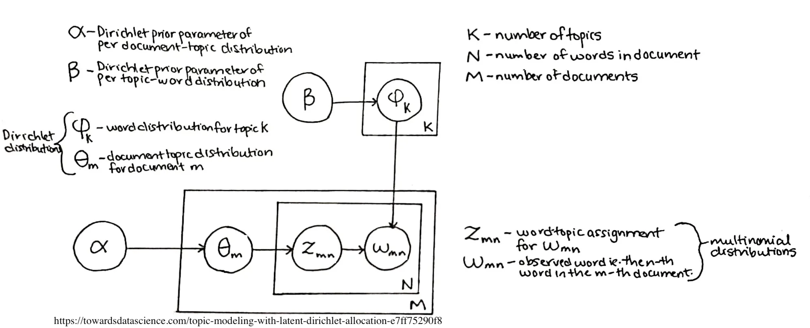

# set options
options(stringsAsFactors = F) # no automatic data transformation
options("scipen" = 100, "digits" = 4) # suppress math annotation
# load packages
library(dplyr)
library(flextable)
library(ggplot2)
library(lda)
library(ldatuning)
#install.packages("microbenchmark")
library(microbenchmark)
library(quanteda)
library(RColorBrewer)
#install.packages("readxl")
library(readxl)
library(reshape2)
library(slam)
library(stringr)
#install.packages("textstem")
library(textstem)
library(tidyr)
library(tidytext)
library(tm)
library(topicmodels)
library(wordcloud)
#install.packages("writexl")
library(writexl)
# activate klippy for copy-to-clipboard button
#klippy::klippy()
#install.packages("remotes")
#remotes::install_github("rlesur/klippy")Trabalho Final
PPCA/UnB : Métodos Computacionais Intensivos em Mineração de Dados
Professor: Donald Matthew Pianto
Introdução
O presente trabalho final buscará aplicar o Latent Dirichlet Allocation (LDA), um modelo estatístico generativo para coleções de dados discretos tais como corpora de texto [1], na base de dados de perguntas de acesso à informação inquiridas ao Senado Federal, entre janeiro de 2022 e junho de 2024.
Lei de Acesso à Informação
A Lei nº 12.527, de 2011 (Lei de Acesso à Informação - LAI) [2] regulamentou o direito de acesso à informação previsto na Constituição Federal, vinculando as entidades públicas e as entidades privadas que, de forma geral, recebem recursos públicos, a uma gestão transparente e a proteção da informação pessoal.
A partir dela, são realizados pelos órgãos públicos dois tipos de transparência: a transparência ativa, na qual disponibilizam informações de interesse geral em seus sítios de internet, tais como a agenda de autoridades e a remuneração de seus servidores; e a transparência passiva, na qual recebem, tratam e respondem a pedidos de acesso à informação solicitados por qualquer pessoal.
Ainda, os órgãos públicos de cada Poder publicam em seus sítios de internet relatórios estatísticos acerca das demandas recebidas e do perfil dos solicitantes, bem com a relação de perguntas e respostas, e o estado do seu atendimento (ex: respondido, negativo, respondido parcialmente etc).
Fonte dos Dados
O Senado Federal [3] publica mensalmente relatórios estatísticos dos pedidos e dos assuntos tratados, bem como uma tabela com as perguntas e o estado do seu atendimento, sem incluir o texto das respostas fornecidas.
Foram obtidos os relatórios em formato Office Open XML/Open Document e realizadas as seguintes operações para tratamento dos dados:
- Remoção de quebras de linha e marcações de parágrafos desnecessários.
- Cada tabela foi salva em uma aba da planilha, sendo incluído o mês/ano da informação.
Latent Dirichlet Allocation (LDA)
O Latent Dirichlet Allocation (LDA) é um modelo generativo probabilístico, sendo especificamente um modelo bayesiano hierárquico de três níveis, para uma coleção de dados discretos (como um corpora de texto).
Ele é uma técnica amplamente adotada para ajustar modelos de tópicos. Opera tratando cada documento como uma mistura de tópicos, e cada tópico como uma mistura de palavras. Consequentemente, os documentos podem exibir sobreposições de conteúdo, semelhantes à fluidez observada no uso da linguagem natural, em vez de serem estritamente segregados em grupos distintos.

Pelo diagrama acima, temos que:
\(\alpha\) e \(\beta\) são distribuições a priori de Dirichlet.
\(\alpha\) é um parâmetro da distribuição de probabilidades de tópicos presentes em documentos.
\[f(x_1, x_2, \ldots, x_k; \alpha_1, \alpha_2, \ldots, \alpha_k) = \frac{1}{B(\alpha)} \prod{i=1}^k x_i^{\alpha_i - 1}\]
onde
\[B(\alpha) = \frac{\prod_{i=1}^k \Gamma(\alpha_i)}{\Gamma\left(\sum_{i=1}^k \alpha_i\right)}\]
sendo \(\Gamma\) a função Gamma.
- Para um valor de \(\alpha\) maior do que 1, a maioria dos documentos conterá uma mistura de quase todos os tópicos, com proporções relativamente equilibradas entre eles.
- Para um valor de \(\alpha\) igual a 1, haverá uma mistura média de tópicos nos documentos.
- Para um valor de \(\alpha\) menor do que 1, cada documento será dominado por poucos tópicos ou até um tópico, em casos extremos.
\(\beta\) é um parâmetro da distribuição de probabilidades de palavras presentes em tópicos.
\(\theta\) e \(\phi\) são distribuições multinomiais.
\(\theta_m\) é a distribuição de tópicos para cada documento \(m\) dentro dos \(M\) documentos, a partir do \(\alpha\) inicial.
\(\phi_k\) é a distribuição de palavras para cada tópico \(k\), dentre os vários tópicos \(K\), a partir do \(\beta\) inicial.
\(z_{mn}\) é a atribuição de tópicos para a \(n-ésima\) palavra do document \(m\), obtida a partir da distribuição de \(\theta\).
Ao combinarmos a lista de tópicos presentes em \(z_{mn}\) com a distribuição de palavras para cada tópico presente em \(\phi_k\) , obtemos \(w_{mn}\), que representa a \(n-ésima\) palavra observada para cada documento \(m\).
O conjunto de palavras observadas \(w\) com os tópicos associados \(z\) representam o total de palavras em um documento. Adicionando-se a isso a distribuição de tópicos presentes em \(\theta\), obtemos os documentos presentes no corpus.
Gibbs Sampling
Gibbs sampling é uma técnica de amostragem dentro do grupo de algoritmos de Métodos de Monte Carlo por meio da cadeia de Markov, no qual são realizadas diversas interações.
Suponha que você deseja amostrar de uma distribuição conjunta \((P(X_1, X_2, \ldots, X_n))\), onde \((X_1, X_2, \ldots, X_n\) são variáveis aleatórias. O Gibbs sampling funciona da seguinte maneira:
- Inicialização: Começa-se com um valor inicial para cada uma das variáveis \((X_1, X_2, \ldots, X_n)\), digamos \((X_1^{(0)}, X_2^{(0)}, \ldots, X_n^{(0)})\).
- Amostragem Condicional: Em cada iteração do algoritmo, cada variável é amostrada condicionalmente às outras variáveis. Isso significa que, para a \((k)-ésima\) variável \((X_k)\), amostra-se de sua distribuição condicional, dada as outras variáveis fixadas em seus valores mais recentes:
\[ X_k^{(t+1)} \sim P(X_k \mid X_1^{(t+1)}, X_2^{(t+1)}, \ldots, X_{k-1}^{(t+1)}, X_{k+1}^{(t)}, \ldots, X_n^{(t)}) \]
- Repetição: O processo continua iterativamente, alternando entre as variáveis, até que a cadeia de Markov converja para a distribuição estacionária desejada.
- Coleta de Amostras: Após um número suficiente de iterações (geralmente depois de descartar um número inicial de amostras como “burn-in”), as amostras subsequentes podem ser consideradas como provenientes da distribuição conjunta original.
No contexto da LDA, a Gibbs sampling funciona com dois princípios:
- Os documentos tem que ser os mais monocromáticos possíveis, isto é, tem que pertencer a menor quantidade de tópicos possíveis.
- As palavras tem que ser as mais monocromáticas possíveis, isto é, tem que pertencer a menor quantidade de de tópicos possíveis.
Execução
A partir dos dados consolidados de pedidos de acesso à informação de 2022 a junho de 2024, foram realizados os seguintes procedimentos:
- Texto foi convertido para letras minúsculas.
- Como a parte principal de uma pergunta começa após alguns verbos característicos (ex: solicito, requeiro etc), foi realizada a remoção da parte anterior.
- Foram removidas sinais específicos (ex: aspas duplas, aspas curvas, nº).
- Foram removidas algunas palavras de encerramento de e-mail (ex: por favor, atenciosamente), de marcação de imprensa (sic)).
- Foram removidas palavras com 3 ou mais letras repetidas, por se tratarem de ocultação de informações pessoais.
Ao usar o pacote quanteda, foram removidas:
- Pontuações, símbolos e números.
- “Stopwords” em português.
- Realizar o stemming das palavras
dir_bases <- paste0(getwd(), "/bases/")
caminho_arquivo <- paste0(dir_bases, "dados_consolidados.xlsx")
dados <- readxl::read_excel(caminho_arquivo)
salvar_df_excel <- function(dados, nm_arquivo) {
writexl::write_xlsx(dados, paste0(dir_bases, nm_arquivo))
}
processar_texto <- function(texto, padrao) {
match <- stringr::str_match(texto, padrao)
if (!is.na(match[1])) {
partes_texto <- stringr::str_split_fixed(texto, match[1], n = 2)
partes_texto <- stringr::str_trim(partes_texto)
resultado <- partes_texto[2]
} else {
resultado <- ""
}
return(resultado)
}
padroes <- list(
"\\b[Ss]olicit\\w*\\b", # Captura palavras que começam com "solicit"
"\\b[Oo]bter\\b", # Captura a palavra "obter"
"\\b[Rr]equei\\w*\\b", # Captura palavras que começam com "reque"
"\\b[Ss]aber\\b", # Captura a palavra "saber"
"\\b[Dd]isponibilizar\\b", # Captura a palavra "disponibilizar"
"\\b[Rr]eceb\\w*\\b", # Captura a palavra "receber"
"\\b[Gg]ostaria\\s+de\\s+\\w+\\b", # Captura "gostaria de" seguido de uma palavra
"\\b[Gg]ostaria\\s+que\\b", # Captura a expressão "gostaria de"
"\\b[Nn]ecessito\\s+de\\b", # Captura a expressão "necessito de"
"\\b[Nn]ecessito\\s+da\\b", # Captura a expressão "necessito da"
"\\b[Nn]ecessito\\s+do\\b" # Captura a expressão "necessito do"
)
# Remoção dos dois tipos de aspas duplas
dados <- dados |>
dplyr::mutate(text = tolower(text)) |>
dplyr::mutate(text = gsub('"', '', text)) |>
dplyr::mutate(text = gsub('[\u201C\u201D"]', '', text)) |>
dplyr::mutate(text = gsub('/', ' ', text)) |>
dplyr::mutate(text = gsub("\\b[A-Za-z0-9._%+-]+@[A-Za-z0-9.-]+\\.[A-Z|a-z]{2,7}\\b", "", text))
dados <- dados |>
dplyr::mutate(text2 = "")
# Remoção da parte anterior da pergunta
for (padrao in padroes) {
linhas_vazias <- which(dados$text2 == "")
dados$text2[linhas_vazias] <- sapply(dados$text[linhas_vazias], processar_texto, padrao = padrao)
}
dados <- dados |>
dplyr::mutate(text2 = dplyr::if_else(text2 == "", text, text2))
# Remover a substring "nº" da coluna 'text2'
dados$text2 <- gsub("nº", "", dados$text2)
# remover expressões de polidez
dados$text2 <- gsub("lei de acesso à informação", "", dados$text2)
dados$text2 <- gsub("por favor", "", dados$text2)
dados$text2 <- gsub("por gentileza", "", dados$text2)
dados$text2 <- gsub("atenciosamente", "", dados$text2)
dados$text2 <- gsub("respeitosamente", "", dados$text2)
dados$text2 <- gsub("att.", "", dados$text2)
dados$text2 <- gsub("atte.", "", dados$text2)
dados$text2 <- gsub("obrigado", "", dados$text2)
dados$text2 <- gsub("por favor", "", dados$text2)
# Remove a marcação (sic) dos pedidos
dados$text2 <- gsub("\\(sic\\)", "", dados$text2, ignore.case = TRUE)
# Remove palavras com 3 ou mais letras repetidas (ex: XXX, YYY, ZZZ, muito usadas para mascaramento de informações pessoais)
dados$text2 <- gsub("\\b([A-Z])\\1{2,}\\b", "", dados$text2, ignore.case = TRUE)
dados$text <- dados$text2
dados <- dados |>
dplyr::select(-text2)dados <- as.data.frame(dados)
dados$text |>
quanteda::tokens(remove_punct = TRUE, # remove punctuation
remove_symbols = TRUE, # remove symbols
remove_number = TRUE) |> # remove numbers
quanteda::tokens_select(pattern = quanteda::stopwords("pt"), selection = "remove") |>
quanteda::tokens_wordstem(language="portuguese") |>
quanteda::dfm(tolower = T) -> ctxt
# add docvars
quanteda::docvars(ctxt, "status") <- dados$st_pedido
quanteda::docvars(ctxt, "periodo") <- dados$dt_periodo
# clean data
ctxt <- quanteda::dfm_subset(ctxt, quanteda::ntoken(ctxt) > 0)
dim(ctxt)[1] 1762 5218# inspect data
ctxt[1:5, 1:5]Document-feature matrix of: 5 documents, 5 features (76.00% sparse) and 2 docvars.
features
docs exposiçã motiv pec apresent senador
text1 1 1 1 1 1
text2 0 0 0 0 0
text3 0 0 0 0 0
text4 0 0 0 0 3
text5 0 0 0 0 0Após o processamento, verificamos o total de 1.762 documentos com 5.218 termos.
Inicialmente, iremos executar um LDA não supervisionado para identificação dos tópicos presentes nos dados. A partir dessa informação, iremos executar um LDA semi-supervisionado.
Como não há uma quantidade ideal de tópicos, é necessário análise com diferentes números. Após algumas análises, verificou-se que o ideal seria utilizar 10 tópicos com as 8 palavras em cada um.
A matriz presente na variável ddlda_topics representa os 10 tópicos com as 8 palavras com maior probabilidade de aparecem em cada tópico. Os valores da probabilidade da matriz \(\beta\) associados aparecem entre parênteses, que é a probabilidade da palavra aparecer no tópico.
topicmodels::LDA(ctxt, k = 10, control = list(seed = 1)) -> ddlda# define number of topics
ntopics = 10
# define number of terms
nterms = 8
# generate table
#If matrix == "beta" (default), returns a table with one row per topic and term, with columns
#topic Topic, as an integer
#term Term
#beta Probability of a term generated from a topic according to the multinomial model
#If matrix == "gamma", returns a table with one row per topic and document, with columns
#topic Topic, as an integer
#document Document name or ID
#gamma Probability of topic given document
tidytext::tidy(ddlda, matrix = "beta") %>%
dplyr::group_by(topic) %>%
dplyr::slice_max(beta, n = nterms) %>%
dplyr::ungroup() %>%
dplyr::arrange(topic, -beta) %>%
dplyr::mutate(term = paste(term, " (", round(beta, 3), ")", sep = ""),
topic = paste("topic", topic),
topic = factor(topic, levels = c(paste("topic", 1:ntopics))),
top = rep(paste("top", 1:nterms), nrow(.)/nterms),
top = factor(top, levels = c(paste("top", 1:nterms)))) %>%
dplyr::select(-beta) %>%
tidyr::spread(topic, term) -> ddlda_top_terms
ddlda_top_terms# A tibble: 8 × 11
top `topic 1` `topic 2` `topic 3` `topic 4` `topic 5` `topic 6` `topic 7`
<fct> <chr> <chr> <chr> <chr> <chr> <chr> <chr>
1 top 1 requer (0.0… emend (0… legisl (… senador … senador … inform (… sen (0.0…
2 top 2 inform (0.0… valor (0… consulto… sen (0.0… inform (… sen (0.0… concurs …
3 top 3 audiênc (0.… lei (0.0… liberdad… gast (0.… qua (0.0… acess (0… acess (0…
4 top 4 artig (0.01… tod (0.0… trabalh … inform (… sen (0.0… dev (0.0… federal …
5 top 5 solicit (0.… document… pesso (0… é (0.011) cas (0.0… cas (0.0… dia (0.0…
6 top 6 lei (0.013) senador … carg (0.… federal … quant (0… públic (… lei (0.0…
7 top 7 fornec (0.0… inform (… lei (0.0… gabinet … númer (0… federal … sit (0.0…
8 top 8 dat (0.012) motiv (0… públic (… plan (0.… relaçã (… ped (0.0… comissã …
# ℹ 3 more variables: `topic 8` <chr>, `topic 9` <chr>, `topic 10` <chr>Abaixo, a matriz \(\beta\) completa, com as palavras associadas com suas probabilidades em cada um dos 10 tópicos.
ddldaA LDA_VEM topic model with 10 topics.# extract topics
ddlda_topics <- tidy(ddlda, matrix = "beta")
print(ddlda_topics)# A tibble: 52,180 × 3
topic term beta
<int> <chr> <dbl>
1 1 exposiçã 6.84e-27
2 2 exposiçã 1.10e- 2
3 3 exposiçã 2.69e-33
4 4 exposiçã 1.85e-45
5 5 exposiçã 2.77e-43
6 6 exposiçã 5.55e-34
7 7 exposiçã 1.79e- 6
8 8 exposiçã 8.43e-31
9 9 exposiçã 3.04e-52
10 10 exposiçã 4.08e-16
# ℹ 52,170 more rowsModelo de tópicos semi-supervisionado
Em seguida, há um modelo de tópicos semi-supervisionado, no qual é definido um dicionário contendo as palavras mais comuns de cada tópico, para guiar o LDA a separar os termos.
# semisupervised LDA
dict <- dictionary(list(sessao = c("requer", "inform", "plena"),
ceaps = c("gast", "combust", "viag", "alug"),
concurso = c("comiss", "concurs", "servid", "poss", "nomeaç", "analis", "vag"),
pl = c("projet", "lei", "motiv", "andam"),
cn = c("senad", "feder", "congres", "nacion", "palác"),
covid = c("pandem", "covid", "mort", "infect", "posit"),
gastos = c("gabinet", "parlamen", "pesso", "verba"),
fumigeno = c("fumígen", "cigarr", "eletrôn", "fum", "tabag", "tabac"),
pais = c("pact", "federaç", "federat", "estad"),
tribunal = c("julgam", "impeach", "golp", "testemunh")
))
#residual = TRUE: Este argumento indica que termos que não se encaixam nos tópicos definidos no dicionário devem ser incluídos em um tópico residual.
tmod_slda <- seededlda::textmodel_seededlda(ctxt,
dict,
residual = TRUE,
min_termfreq = 2)
# inspect
seededlda::terms(tmod_slda) sessao ceaps concurso pl cn covid
[1,] "inform" "senador" "concurs" "lei" "acess" "sen"
[2,] "requer" "gast" "legisl" "projet" "sen" "federal"
[3,] "cas" "valor" "sen" "motiv" "dia" "process"
[4,] "ser" "parlament" "poss" "artig" "sit" "envi"
[5,] "públic" "emend" "carg" "sobr" "câm" "cóp"
[6,] "acess" "tod" "vag" "desd" "final" "desd"
[7,] "solicit" "ano" "consultor" "agradec" "text" "document"
[8,] "dev" "destin" "é" "apresent" "document" "contrat"
[9,] "ped" "viag" "prov" "exposiçã" "cóp" "ano"
[10,] "sobr" "r" "áre" "bem" "encontr" "númer"
gastos fumigeno pais tribunal other
[1,] "pesso" "eletrôn" "estad" "servidor" "legisl"
[2,] "comissã" "liberdad" "sobr" "carg" "congress"
[3,] "gabinet" "acess" "agradec" "sen" "qua"
[4,] "senador" "direit" "pesquis" "quant" "algum"
[5,] "dat" "trabalh" "desd" "federal" "nacional"
[6,] "qua" "brasil" "legisl" "nom" "exist"
[7,] "sobr" "tod" "federal" "respost" "polít"
[8,] "president" "regul" "possível" "efet" "form"
[9,] "quant" "busc" "pod" "ocup" "públic"
[10,] "audiênc" "discurs" "senador" "dat" "cas" Para verificarmos como os tópicos são tratados ao longo do tempo, vamos plotar o seguinte gráfico:
# generate data frame
data.frame(tmod_slda$data$periodo, seededlda::topics(tmod_slda)) %>%
dplyr::rename(Periodo = 1,
Tópico = 2) %>%
#dplyr::mutate(Periodo = stringr::str_remove_all(Periodo, "-.*"),
# Periodo = stringr::str_replace_all(Periodo, ".$", "0")) %>%
dplyr::mutate_if(is.character, factor) -> topic_df
# inspect
head(topic_df, 10) Periodo Tópico
text1 2022-01-01 pl
text2 2022-01-01 ceaps
text3 2022-01-01 concurso
text4 2022-01-01 covid
text5 2022-01-01 pl
text6 2022-01-01 cn
text7 2022-01-01 ceaps
text8 2022-01-01 pl
text9 2022-01-01 ceaps
text10 2022-01-01 pltopic_df %>%
dplyr::group_by(Periodo, Tópico) %>%
dplyr::summarise(freq = n()) %>%
ggplot(aes(x = Periodo, y = freq, fill = Tópico)) +
geom_bar(stat="identity", position="fill", color = "black") +
theme_bw() +
labs(x = "Mês/ano") +
scale_fill_manual(values = rev(colorRampPalette(brewer.pal(8, "RdBu"))(ntopics+1))) +
scale_y_continuous(name ="% de pedidos", labels = seq(0, 100, 25))`summarise()` has grouped output by 'Periodo'. You can override using the
`.groups` argument.
No gráfico acima, vale notar que os pedidos de LAI relacionados a ‘concurso’ reduziram após a realização do concurso (nov/2022) e as consequentes nomeações (durante o ano de 2023).
Utilização de modelo orientado a dados
Ao usar o modelo orientado a dados, não definimos inicialmente a quantidade de tópicos que queremos separar as palavras do corpus, mas utilizamos duas métricas, CaoJuan2009[4] e Deveaud2014[5].
O algoritmo de CaoJuan2009 introduz a métrica de densidade dos tópicos, penalizando conjuntos de tópicos que sejam muito semelhantes entre si. Quanto menor a densidade, maior a diversidade de tópicos.
O algoritmo de Deveaud2014 leva em conta a coerência dos tópicos, ou seja, a semelhança semântica entre as palavras que compõem um tópico. Quanto maior a coerência dos tópicos, mais os tópicos são semanticamente ricos e úteis.
Ao contrário do modelo não-supervisionado, foi preferido utilizar aqui o stemming no lugar da lematização.
# load data
#textdata <- base::readRDS(url("https://slcladal.github.io/data/sotu_paragraphs.rda", "rb"))
dados <- as.data.frame(dados)
#textdata
#dados
# create corpus object
tm::Corpus(DataframeSource(dados)) %>%
# convert to lower case
#tm::tm_map(content_transformer(tolower)) %>%
# remove stop words
tm::tm_map(removeWords, quanteda::stopwords(language = "pt", source="stopwords-iso")) %>%
# remove punctuation
tm::tm_map(removePunctuation, preserve_intra_word_dashes = TRUE) %>%
# remove numbers
tm::tm_map(removeNumbers) %>%
# stemming
tm::tm_map(stripWhitespace) %>%
tm::tm_map(stemDocument, language = "pt") -> corpustexto
# inspect data
str(corpustexto)Classes 'SimpleCorpus', 'Corpus' hidden list of 3
$ content: Named chr [1:1763] "exposiçã motiv pec apresent senador jos serr sp" "gast cpi pandem parlament" "previsã concurs sen" "inform quant senador avis sen test posit covid- iníci pod envi list nom senador contamin sen recess cas contami"| __truncated__ ...
..- attr(*, "names")= chr [1:1763] "1." "2." "3." "4." ...
$ meta :List of 1
..$ language: chr "en"
..- attr(*, "class")= chr "CorpusMeta"
$ dmeta :'data.frame': 1763 obs. of 4 variables:
..$ st_pedido : chr [1:1763] "RESPONDIDO" "RESPONDIDO" "RESPONDIDO" "RESPONDIDO" ...
..$ dt_periodo: POSIXct[1:1763], format: "2022-01-01" "2022-01-01" ...
..$ nm_aba : chr [1:1763] "01-2022" "01-2022" "01-2022" "01-2022" ...
..$ id : num [1:1763] 1 2 3 4 5 6 7 8 9 10 ...#inspect(corpustexto)Em razão dos pedidos de acesso à informação tratarem de assuntos repetidos, optou-se por utilizar um valor mínimo de termos igual a 7.
# compute document term matrix with terms >= minimumFrequency
minimumFrequency <- 7
DTM <- tm::DocumentTermMatrix(corpustexto,
control = list(bounds = list(global = c(minimumFrequency, Inf))))
# inspect the number of documents and terms in the DTM
dim(DTM)[1] 1763 1029Pelos critérios acima, temos 1.763 documentos com 1.029 termos que aparecem pelo menos 7 vezes.
sel_idx <- slam::row_sums(DTM) > 0
DTM <- DTM[sel_idx, ]
dados <- dados[sel_idx, ]
# inspect the number of documents and terms in the DTM
dim(DTM)[1] 1760 1029# create models with different number of topics
result <- ldatuning::FindTopicsNumber(
DTM,
topics = seq(from = 2, to = 25, by = 1),
metrics = c("CaoJuan2009", "Deveaud2014"),
method = "Gibbs",
control = list(seed = 1),
verbose = TRUE
)fit models... done.
calculate metrics:
CaoJuan2009... done.
Deveaud2014... done.#print(result)
FindTopicsNumber_plot(result)
Pela análise dos gráficos acima, como a própria coluna de etiquetas da direita informa, o número de tópicos no qual os valores de CaoJuan2009 são mínimos e os valores de Deveaud2014 são máximos é quando o número de tópicos é igual a 8.
Abaixo, iremos executar 10.000 interações de amostragem de Gibbs para visualização dos tópicos.
# number of topics
K <- 8
# set random number generator seed
set.seed(1)
# compute the LDA model, inference via 1000 iterations of Gibbs sampling
topicModel <- topicmodels::LDA(DTM, K, method="Gibbs", control=list(iter = 10000, verbose = 1000))K = 8; V = 1029; M = 1760
Sampling 10000 iterations!
Iteration 1000 ...
Iteration 2000 ...
Iteration 3000 ...
Iteration 4000 ...
Iteration 5000 ...
Iteration 6000 ...
Iteration 7000 ...
Iteration 8000 ...
Iteration 9000 ...
Iteration 10000 ...
Gibbs sampling completed!topicModelA LDA_Gibbs topic model with 8 topics.Após a execução da amostragem de Gibbs, são obtidos os valores de \(\alpha\) , \(\beta\) e \(\theta\) , sendo:
\(a\) : parâmetro de Dirichlet relativo a distribuição dos tópicos. No caso abaixo, o valor do parâmetro calculado foi de 6.25, informando que cada documento possui uma distribuição média de tópicos.
tmResult <- posterior(topicModel)
attr(topicModel, "alpha")[1] 6.25\(\theta\) : matriz que contém as distribuições de tópicos para cada documento
theta <- tmResult$topics
head(theta) 1 2 3 4 5 6 7 8
1. 0.1116 0.11161 0.1295 0.1295 0.1116 0.1116 0.1652 0.1295
2. 0.1713 0.11574 0.1157 0.1343 0.1157 0.1157 0.1157 0.1157
3. 0.1179 0.17453 0.1179 0.1179 0.1179 0.1179 0.1179 0.1179
4. 0.0947 0.10985 0.1250 0.1856 0.1250 0.0947 0.1098 0.1553
5. 0.1500 0.11364 0.1136 0.1318 0.1318 0.1318 0.1136 0.1136
6. 0.1162 0.08803 0.1021 0.1021 0.1303 0.1021 0.2289 0.1303\(\phi\) : matriz que contém as distribuições de termos para cada tópico
phi <- tmResult$terms
head(phi, 10) apresent exposiçã jos motiv pec senador cpi
1 0.00002024 0.00002024 0.00002024 0.00002024 0.00002024 0.00082964 0.00831664
2 0.00001931 0.00001931 0.00001931 0.00001931 0.01469424 0.00001931 0.00001931
3 0.00001831 0.00001831 0.00001831 0.00294823 0.01613287 0.00001831 0.00001831
4 0.00001950 0.00040944 0.00001950 0.00001950 0.00001950 0.09029227 0.00001950
5 0.00001935 0.00001935 0.00021289 0.00001935 0.00001935 0.00021289 0.00001935
6 0.00002128 0.00002128 0.00023410 0.00002128 0.00002128 0.00002128 0.00002128
7 0.03271881 0.01285883 0.00002006 0.02469458 0.00282854 0.00042127 0.00002006
8 0.00002009 0.00002009 0.00182808 0.00042186 0.00022098 0.00002009 0.00002009
gast pandem parlament concurs previsã sen cas
1 0.01782715 0.00143669 0.00002024 0.00002024 0.00002024 0.00082964 0.00002024
2 0.00001931 0.00001931 0.00001931 0.05427794 0.00716368 0.03014154 0.00001931
3 0.00001831 0.00001831 0.00075079 0.00001831 0.00001831 0.00001831 0.05330623
4 0.00001950 0.00001950 0.03745442 0.00001950 0.00001950 0.00001950 0.00021447
5 0.00001935 0.00001935 0.00001935 0.00001935 0.00001935 0.00001935 0.02750198
6 0.00002128 0.00002128 0.00002128 0.00002128 0.00002128 0.00002128 0.00002128
7 0.00002006 0.00002006 0.00002006 0.00002006 0.00062188 0.00002006 0.00002006
8 0.00002009 0.00022098 0.00002009 0.00002009 0.00002009 0.16856506 0.00002009
covid- envi inform iníci list nom pod
1 0.00002024 0.00002024 0.00002024 0.00002024 0.00022259 0.00002024 0.00002024
2 0.00001931 0.00001931 0.00001931 0.00001931 0.00001931 0.02299716 0.00001931
3 0.00001831 0.00001831 0.15310663 0.00001831 0.00001831 0.00001831 0.00368071
4 0.00001950 0.00001950 0.02478114 0.00567373 0.02517109 0.00001950 0.00001950
5 0.00001935 0.00137413 0.00524492 0.00001935 0.00001935 0.00001935 0.00214829
6 0.00002128 0.00023410 0.00002128 0.00002128 0.00002128 0.00002128 0.00002128
7 0.00002006 0.00002006 0.00002006 0.00002006 0.00002006 0.00002006 0.01265823
8 0.00303341 0.04783141 0.00002009 0.00002009 0.00002009 0.00002009 0.00142630
posit quant cóp document regulament uso vag
1 0.00002024 0.00002024 0.02794472 0.05182217 0.00022259 0.00002024 0.00002024
2 0.00001931 0.00446041 0.00001931 0.00001931 0.00001931 0.00001931 0.01527351
3 0.00038455 0.00056767 0.00038455 0.00001831 0.00386383 0.00093391 0.00001831
4 0.00001950 0.02731580 0.00001950 0.00021447 0.00021447 0.00001950 0.00021447
5 0.00330953 0.00001935 0.00040643 0.00001935 0.00021289 0.00698678 0.00001935
6 0.00002128 0.00044691 0.00044691 0.00002128 0.00108536 0.00002128 0.00002128
7 0.00002006 0.00002006 0.00002006 0.00002006 0.00343036 0.00002006 0.00002006
8 0.00002009 0.00002009 0.00002009 0.00002009 0.00002009 0.00002009 0.00002009
acess achar bas congress consegu câm encontr
1 0.00002024 0.00002024 0.00811429 0.00002024 0.00002024 0.00002024 0.00002024
2 0.00001931 0.00040549 0.01121860 0.00001931 0.00001931 0.00001931 0.00079167
3 0.00001831 0.00001831 0.00056767 0.00001831 0.00001831 0.00001831 0.00020143
4 0.00430892 0.00001950 0.00001950 0.00021447 0.00001950 0.00001950 0.00001950
5 0.02769552 0.00001935 0.00001935 0.02711490 0.00001935 0.00001935 0.00001935
6 0.06237630 0.00108536 0.00002128 0.00023410 0.00214944 0.00002128 0.00002128
7 0.00002006 0.00002006 0.00002006 0.00002006 0.00864611 0.01145459 0.01907761
8 0.00002009 0.00002009 0.00002009 0.00002009 0.00002009 0.00584584 0.00002009
gost inic lei popul projet receb sit
1 0.00022259 0.00002024 0.00002024 0.00002024 0.00022259 0.01742245 0.00002024
2 0.00001931 0.00021240 0.00001931 0.00001931 0.00001931 0.00098477 0.00001931
3 0.00001831 0.00001831 0.01833031 0.00001831 0.00001831 0.00001831 0.00001831
4 0.00001950 0.00001950 0.00040944 0.00001950 0.00001950 0.00001950 0.00489384
5 0.00001935 0.00389015 0.00118059 0.00427723 0.00001935 0.00001935 0.00001935
6 0.00002128 0.00002128 0.01832344 0.00002128 0.00534168 0.00044691 0.00002128
7 0.00403218 0.00322975 0.07444482 0.00002006 0.06361211 0.00002006 0.01927822
8 0.03115772 0.00002009 0.00002009 0.00002009 0.00002009 0.00002009 0.00002009
abert acord algum anterior arquiv atend complet
1 0.00002024 0.00002024 0.00002024 0.00204375 0.00305550 0.00002024 0.00002024
2 0.00001931 0.00001931 0.00001931 0.00310877 0.00001931 0.00001931 0.00001931
3 0.00001831 0.00001831 0.00001831 0.00020143 0.00001831 0.00770935 0.00001831
4 0.00937823 0.00723352 0.00001950 0.00177426 0.00060442 0.00723352 0.01171791
5 0.00001935 0.00001935 0.03079216 0.00079351 0.00001935 0.00001935 0.00001935
6 0.00002128 0.00002128 0.00002128 0.00002128 0.00002128 0.00002128 0.00002128
7 0.00082248 0.00002006 0.00002006 0.00002006 0.00002006 0.00002006 0.00002006
8 0.00042186 0.00002009 0.00022098 0.00002009 0.02010888 0.00002009 0.00002009
csv dad demand descont dezembr dias diss
1 0.00082964 0.00002024 0.00467432 0.00002024 0.00002024 0.00002024 0.00528137
2 0.00001931 0.00001931 0.00001931 0.00021240 0.01121860 0.00098477 0.00001931
3 0.00001831 0.00001831 0.00001831 0.00001831 0.00001831 0.00056767 0.00001831
4 0.00430892 0.03569966 0.00001950 0.00391897 0.00001950 0.01269278 0.00001950
5 0.00001935 0.00563200 0.00001935 0.00001935 0.00001935 0.00021289 0.00001935
6 0.00002128 0.00959799 0.00002128 0.00002128 0.00002128 0.00023410 0.00087254
7 0.00002006 0.00242733 0.00242733 0.00002006 0.00002006 0.00002006 0.00002006
8 0.00002009 0.00002009 0.00002009 0.00002009 0.00002009 0.00002009 0.00142630
federal funcionári janeir mensal obtiv part possív
1 0.00002024 0.00002024 0.00002024 0.00002024 0.00002024 0.00002024 0.00002024
2 0.00368804 0.00330186 0.00001931 0.00001931 0.00001931 0.00001931 0.00001931
3 0.00001831 0.00001831 0.00001831 0.00001831 0.00001831 0.00001831 0.00001831
4 0.00001950 0.00177426 0.01288775 0.00001950 0.00001950 0.01249781 0.00021447
5 0.00001935 0.00001935 0.00001935 0.00369661 0.00001935 0.00040643 0.00098705
6 0.00002128 0.00002128 0.00938518 0.00002128 0.00044691 0.00002128 0.00065973
7 0.00002006 0.00002006 0.00002006 0.00042127 0.00002006 0.00002006 0.00002006
8 0.12075373 0.00002009 0.00002009 0.00002009 0.00122542 0.00002009 0.00102453
praz protocol rea recent referent reforc respost
1 0.00002024 0.00002024 0.00103199 0.00042494 0.00325786 0.00002024 0.00002024
2 0.00021240 0.00001931 0.00001931 0.00001931 0.00001931 0.00001931 0.02956226
3 0.00954055 0.01192111 0.00001831 0.00038455 0.00001831 0.00148327 0.00001831
4 0.00001950 0.00060442 0.00118934 0.00001950 0.00001950 0.00001950 0.00138431
5 0.00021289 0.00001935 0.00001935 0.00195475 0.00001935 0.00001935 0.00001935
6 0.00002128 0.00002128 0.00002128 0.00002128 0.00002128 0.00002128 0.00406478
7 0.00002006 0.00002006 0.00002006 0.00182551 0.02790427 0.00002006 0.00002006
8 0.00002009 0.00002009 0.00002009 0.00002009 0.00383696 0.00002009 0.00002009
salári seguint sofr solicit aliment atual autor
1 0.00022259 0.00426961 0.00002024 0.00184140 0.00002024 0.00062729 0.00002024
2 0.00001931 0.00021240 0.00001931 0.00001931 0.00001931 0.01372878 0.00001931
3 0.00001831 0.00001831 0.00001831 0.05495431 0.00020143 0.00020143 0.00001831
4 0.00606368 0.00118934 0.00216421 0.00001950 0.00021447 0.00001950 0.00001950
5 0.00001935 0.00001935 0.00001935 0.00137413 0.00001935 0.00350307 0.00001935
6 0.00002128 0.01938752 0.00002128 0.00065973 0.00044691 0.00002128 0.01044925
7 0.00002006 0.00002006 0.00002006 0.00002006 0.00363097 0.00102309 0.00804429
8 0.00002009 0.01227425 0.00002009 0.00002009 0.00002009 0.00062275 0.00002009
cont excel fiscal inclu planilh prevençã propagand
1 0.00082964 0.00062729 0.00386491 0.01276837 0.00022259 0.00002024 0.00002024
2 0.00001931 0.00001931 0.00001931 0.00001931 0.00001931 0.00001931 0.00001931
3 0.00001831 0.00001831 0.00020143 0.00001831 0.00001831 0.00001831 0.00001831
4 0.02380627 0.00489384 0.00001950 0.00118934 0.01561738 0.00001950 0.00001950
5 0.00001935 0.00001935 0.00001935 0.00001935 0.00001935 0.00001935 0.00001935
6 0.00002128 0.00002128 0.00002128 0.00002128 0.00002128 0.00002128 0.00257507
7 0.00002006 0.00002006 0.00022067 0.00002006 0.00062188 0.00262794 0.00002006
8 0.00202897 0.00002009 0.00002009 0.00002009 0.00002009 0.00002009 0.00002009
relat temát tramit tribut tópic contenh term
1 0.00002024 0.00002024 0.00002024 0.00002024 0.00002024 0.00002024 0.00002024
2 0.00001931 0.00001931 0.00001931 0.00001931 0.00001931 0.00001931 0.00001931
3 0.00001831 0.00001831 0.00001831 0.00001831 0.00001831 0.00258199 0.01283671
4 0.00001950 0.00001950 0.00001950 0.00001950 0.00196923 0.00001950 0.00001950
5 0.00001935 0.00001935 0.00001935 0.00001935 0.00001935 0.00001935 0.00001935
6 0.00278789 0.00002128 0.00002128 0.00002128 0.00002128 0.00002128 0.00002128
7 0.00864611 0.00443339 0.03051215 0.00383157 0.00002006 0.00002006 0.00002006
8 0.00002009 0.00002009 0.00002009 0.00002009 0.00062275 0.00002009 0.00002009
‘ cigarr disposit eletrôn produt produçã public
1 0.00002024 0.00002024 0.00123434 0.00062729 0.00002024 0.00002024 0.00002024
2 0.00001931 0.00001931 0.00001931 0.00001931 0.00001931 0.00001931 0.00059858
3 0.00203263 0.00001831 0.00001831 0.00001831 0.00001831 0.00020143 0.00001831
4 0.00001950 0.00001950 0.00001950 0.00001950 0.00001950 0.00001950 0.01132797
5 0.00330953 0.00001935 0.00001935 0.00001935 0.00001935 0.00389015 0.00021289
6 0.00002128 0.00236225 0.00002128 0.00938518 0.00002128 0.00002128 0.00874673
7 0.00002006 0.00002006 0.00242733 0.00002006 0.00363097 0.00002006 0.00002006
8 0.00042186 0.00002009 0.00002009 0.00002009 0.00002009 0.00022098 0.00002009
ement nacional períod pln situaçã edital link
1 0.00002024 0.00002024 0.00002024 0.00002024 0.00002024 0.00002024 0.01135191
2 0.00001931 0.00001931 0.00001931 0.00001931 0.00137095 0.00986696 0.00001931
3 0.00001831 0.00001831 0.00001831 0.00001831 0.00001831 0.00001831 0.00056767
4 0.00001950 0.00001950 0.02341633 0.00001950 0.00001950 0.00001950 0.00001950
5 0.00001935 0.02401827 0.00001935 0.00001935 0.00001935 0.00001935 0.00001935
6 0.00002128 0.00406478 0.00002128 0.00002128 0.00023410 0.00002128 0.00002128
7 0.00343036 0.00002006 0.00022067 0.00302915 0.00202612 0.00002006 0.00002006
8 0.00002009 0.00182808 0.00002009 0.00022098 0.00062275 0.00002009 0.00002009
respeit agradec atençã cidadã decisã disponibiliz
1 0.00002024 0.00002024 0.00184140 0.00002024 0.00002024 0.00002024
2 0.00001931 0.00001931 0.00001931 0.00079167 0.00001931 0.00001931
3 0.00990679 0.01283671 0.01759783 0.00001831 0.00001831 0.00001831
4 0.00040944 0.00001950 0.00021447 0.00021447 0.00450389 0.00001950
5 0.00001935 0.00001935 0.00040643 0.01201881 0.00001935 0.02788906
6 0.00002128 0.02109004 0.00002128 0.00002128 0.00002128 0.00002128
7 0.00002006 0.00262794 0.00002006 0.00002006 0.00182551 0.00002006
8 0.00002009 0.00664939 0.00022098 0.00002009 0.00403785 0.00002009
exist impeachment ministr necessit obter parec ped
1 0.00265080 0.00042494 0.00002024 0.00022259 0.00002024 0.00103199 0.00002024
2 0.00001931 0.00059858 0.00059858 0.00001931 0.00001931 0.00001931 0.00001931
3 0.00001831 0.00001831 0.00001831 0.00001831 0.00587815 0.00001831 0.03041623
4 0.00001950 0.00001950 0.00703855 0.00138431 0.00021447 0.00001950 0.00001950
5 0.01956686 0.00001935 0.00001935 0.00001935 0.00001935 0.00001935 0.00156767
6 0.00023410 0.00108536 0.00044691 0.00151099 0.00044691 0.00002128 0.00002128
7 0.00002006 0.00042127 0.00002006 0.00002006 0.00002006 0.01326005 0.00002006
8 0.00002009 0.00464051 0.00484140 0.00002009 0.00002009 0.00002009 0.00002009
precis president process públic sent suprem tribunal
1 0.00002024 0.00002024 0.02693296 0.00002024 0.00002024 0.00002024 0.00042494
2 0.00001931 0.00001931 0.00021240 0.02261098 0.00600514 0.00001931 0.00001931
3 0.00001831 0.00001831 0.00075079 0.00752623 0.00001831 0.00001831 0.00001831
4 0.00001950 0.00001950 0.00001950 0.00177426 0.00001950 0.00001950 0.00138431
5 0.00001935 0.00001935 0.00872864 0.02808260 0.00001935 0.00001935 0.00001935
6 0.00002128 0.00002128 0.00002128 0.01321586 0.00002128 0.00002128 0.00002128
7 0.01867640 0.00002006 0.00002006 0.00002006 0.00002006 0.00022067 0.00002006
8 0.00022098 0.02573374 0.00022098 0.00002009 0.00022098 0.00443962 0.00504229
técnic audiênc comissã conform debat direit human
1 0.01135191 0.00002024 0.00002024 0.00002024 0.00042494 0.00002024 0.00002024
2 0.00098477 0.00001931 0.00001931 0.00001931 0.00001931 0.00001931 0.00001931
3 0.00001831 0.00001831 0.00001831 0.01686535 0.00020143 0.00001831 0.00001831
4 0.00021447 0.01444754 0.00001950 0.00001950 0.00001950 0.00001950 0.00001950
5 0.00040643 0.00001935 0.00001935 0.00001935 0.00427723 0.00001935 0.00001935
6 0.00002128 0.00044691 0.00002128 0.00002128 0.00002128 0.02832578 0.00470323
7 0.00042127 0.00002006 0.00002006 0.00002006 0.00002006 0.00002006 0.00002006
8 0.00002009 0.00022098 0.04441632 0.00002009 0.00002009 0.00002009 0.00082364
legisl n° particip realiz requer reuniã saúd
1 0.00002024 0.01297072 0.00082964 0.00002024 0.00002024 0.00002024 0.01195896
2 0.03381027 0.00021240 0.00001931 0.00001931 0.00001931 0.00001931 0.00001931
3 0.00093391 0.00001831 0.00001831 0.00038455 0.00001831 0.00001831 0.00001831
4 0.00001950 0.00001950 0.00001950 0.01249781 0.02770575 0.00372400 0.00001950
5 0.06388744 0.00001935 0.01201881 0.01956686 0.00001935 0.00001935 0.00001935
6 0.00002128 0.00002128 0.00002128 0.00002128 0.00002128 0.00406478 0.00002128
7 0.00002006 0.00002006 0.00002006 0.00643945 0.00002006 0.00002006 0.00002006
8 0.00002009 0.00002009 0.00062275 0.00002009 0.00002009 0.00002009 0.00002009
tem transcriçã únic transport anal categor const
1 0.00123434 0.00002024 0.00002024 0.00022259 0.00002024 0.00123434 0.00042494
2 0.00001931 0.00001931 0.00001931 0.00001931 0.01585279 0.00001931 0.01199096
3 0.00001831 0.00093391 0.00001831 0.00001831 0.00001831 0.00001831 0.00001831
4 0.00001950 0.00001950 0.00255415 0.00001950 0.00001950 0.00099437 0.00001950
5 0.00021289 0.00021289 0.00021289 0.00001935 0.00001935 0.00001935 0.00001935
6 0.00002128 0.00065973 0.00002128 0.00002128 0.00002128 0.00002128 0.00002128
7 0.01326005 0.00002006 0.00102309 0.00202612 0.00002006 0.00002006 0.00002006
8 0.00002009 0.00002009 0.00002009 0.00022098 0.00002009 0.00002009 0.00002009
dat especial ingress servidor clar conhec consider
1 0.00002024 0.00002024 0.00002024 0.00002024 0.00002024 0.00002024 0.00002024
2 0.00137095 0.01411497 0.00465350 0.05118848 0.00001931 0.00175713 0.00001931
3 0.00001831 0.00001831 0.00001831 0.00038455 0.00221575 0.00001831 0.00734311
4 0.04798300 0.00001950 0.00001950 0.00001950 0.00001950 0.00196923 0.00060442
5 0.00001935 0.00834156 0.00001935 0.00001935 0.00021289 0.00001935 0.00001935
6 0.00002128 0.00002128 0.00002128 0.00002128 0.00002128 0.00002128 0.00214944
7 0.00002006 0.00002006 0.00002006 0.00002006 0.00002006 0.00042127 0.00002006
8 0.00022098 0.00002009 0.00002009 0.00002009 0.00002009 0.00062275 0.00002009
format futur merc objet pesquis teletrabalh trabalh
1 0.00002024 0.00002024 0.00022259 0.00002024 0.00022259 0.00002024 0.00002024
2 0.00001931 0.00195022 0.00021240 0.00001931 0.00001931 0.00368804 0.00001931
3 0.01723159 0.00001831 0.00001831 0.00001831 0.00130015 0.00001831 0.00001831
4 0.00177426 0.00001950 0.00001950 0.00001950 0.00001950 0.00001950 0.00021447
5 0.00001935 0.00021289 0.00001935 0.01685730 0.00253537 0.00001935 0.00621262
6 0.00108536 0.00002128 0.00002128 0.00002128 0.03322054 0.00002128 0.00002128
7 0.00082248 0.00002006 0.00102309 0.00002006 0.00002006 0.00002006 0.00002006
8 0.00002009 0.00002009 0.00022098 0.00002009 0.00002009 0.00002009 0.00122542
utiliz cel cordial destin feder respons trat
1 0.00002024 0.00002024 0.00022259 0.02005302 0.00022259 0.00002024 0.01398248
2 0.00001931 0.00001931 0.00001931 0.00001931 0.00001931 0.00001931 0.00001931
3 0.00075079 0.00001831 0.00001831 0.00001831 0.00001831 0.00001831 0.00001831
4 0.00040944 0.00001950 0.00021447 0.00001950 0.00001950 0.00001950 0.00001950
5 0.01201881 0.00001935 0.00001935 0.00001935 0.00001935 0.00872864 0.00001935
6 0.00002128 0.00172381 0.00236225 0.00002128 0.00002128 0.00598012 0.00002128
7 0.00062188 0.00002006 0.00002006 0.00002006 0.00443339 0.00002006 0.00282854
8 0.00022098 0.00002009 0.00182808 0.00002009 0.00062275 0.00002009 0.00042186
adem anex aquisiçã assembl ata avali banc
1 0.00002024 0.00103199 0.00062729 0.00082964 0.00082964 0.00002024 0.00002024
2 0.00001931 0.00001931 0.00001931 0.00001931 0.00001931 0.00001931 0.00890150
3 0.00001831 0.00001831 0.00020143 0.00001831 0.00001831 0.00001831 0.00001831
4 0.00001950 0.00001950 0.00021447 0.00001950 0.00001950 0.00001950 0.00099437
5 0.00001935 0.00001935 0.00176121 0.00098705 0.00001935 0.01008342 0.00001935
6 0.00002128 0.00002128 0.00002128 0.00002128 0.00002128 0.00002128 0.00044691
7 0.00002006 0.00002006 0.00002006 0.00002006 0.00002006 0.00002006 0.00042127
8 0.00202897 0.00926093 0.00002009 0.00002009 0.00162719 0.00002009 0.00002009
brasil disposiçã econôm existent fat fornec fundament
1 0.00002024 0.00082964 0.00002024 0.00163905 0.00002024 0.00042494 0.00022259
2 0.00001931 0.00001931 0.00001931 0.00001931 0.00001931 0.00001931 0.00021240
3 0.00001831 0.00001831 0.00001831 0.00001831 0.00001831 0.02730319 0.00001831
4 0.00001950 0.00001950 0.00060442 0.00001950 0.00216421 0.00001950 0.00001950
5 0.00001935 0.00059997 0.00582554 0.00485785 0.00040643 0.00001935 0.00001935
6 0.01811062 0.00491604 0.00002128 0.00002128 0.00002128 0.00023410 0.00002128
7 0.00002006 0.00002006 0.00022067 0.00022067 0.00002006 0.00002006 0.00002006
8 0.00002009 0.00002009 0.00002009 0.00002009 0.00002009 0.00002009 0.00243074
justic lev mod oficial ordem professor quantidad
1 0.00002024 0.00002024 0.00022259 0.00002024 0.00002024 0.00002024 0.00002024
2 0.00001931 0.00021240 0.00001931 0.00001931 0.00001931 0.00001931 0.00001931
3 0.00001831 0.00001831 0.00093391 0.00001831 0.00001831 0.00001831 0.00001831
4 0.00001950 0.00001950 0.00001950 0.00001950 0.00021447 0.00255415 0.01035310
5 0.00659970 0.00021289 0.00001935 0.00001935 0.00001935 0.00001935 0.00021289
6 0.00002128 0.00470323 0.00002128 0.00023410 0.00619294 0.00002128 0.00214944
7 0.00002006 0.00002006 0.00042127 0.00002006 0.00002006 0.00002006 0.00002006
8 0.00002009 0.00002009 0.00403785 0.00624761 0.00002009 0.00002009 0.00002009
refer tais torn valor – ajud autoriz
1 0.01175661 0.00487667 0.00002024 0.01155426 0.01418483 0.00042494 0.00002024
2 0.00059858 0.00175713 0.00001931 0.00059858 0.00001931 0.00137095 0.00793605
3 0.00752623 0.00020143 0.00001831 0.00001831 0.00001831 0.00038455 0.00001831
4 0.00001950 0.00001950 0.00079939 0.00040944 0.00001950 0.00001950 0.00177426
5 0.00001935 0.00001935 0.00272891 0.00001935 0.00001935 0.00040643 0.00001935
6 0.00002128 0.00002128 0.00002128 0.00002128 0.00002128 0.00193662 0.00002128
7 0.00042127 0.00002006 0.00002006 0.00002006 0.00002006 0.00222672 0.00002006
8 0.00222986 0.00002009 0.00002009 0.00002009 0.00002009 0.00002009 0.00002009
consultor efet elabor execu fund integr orçament
1 0.00002024 0.00002024 0.00002024 0.00710253 0.00143669 0.00609077 0.00831664
2 0.02203171 0.01372878 0.00001931 0.00001931 0.00001931 0.00079167 0.00001931
3 0.00001831 0.00001831 0.00001831 0.00075079 0.00001831 0.00001831 0.00020143
4 0.00021447 0.00021447 0.00333405 0.00040944 0.00001950 0.00001950 0.00001950
5 0.00001935 0.00001935 0.00350307 0.00001935 0.00001935 0.00001935 0.00001935
6 0.00002128 0.00002128 0.00002128 0.00002128 0.00002128 0.00002128 0.00002128
7 0.00002006 0.00002006 0.00262794 0.00002006 0.00142430 0.00002006 0.00002006
8 0.00002009 0.00002009 0.00002009 0.00002009 0.00002009 0.00002009 0.00002009
orçamentár pag program servic sig tabel apont
1 0.00346021 0.00386491 0.00042494 0.01802950 0.00163905 0.00467432 0.00002024
2 0.00001931 0.00001931 0.00001931 0.00001931 0.00001931 0.00001931 0.00001931
3 0.00001831 0.00001831 0.00001831 0.00001831 0.00001831 0.00001831 0.00551191
4 0.00001950 0.00001950 0.00001950 0.00001950 0.00001950 0.00001950 0.00001950
5 0.00001935 0.00001935 0.00001935 0.00001935 0.00001935 0.00001935 0.00001935
6 0.00002128 0.00002128 0.00236225 0.00002128 0.00002128 0.00002128 0.00002128
7 0.00002006 0.00002006 0.00423278 0.00002006 0.00022067 0.00022067 0.00002006
8 0.00002009 0.00022098 0.00002009 0.00002009 0.00002009 0.00002009 0.00002009
artig brasíl classific defer detalh digital disponív
1 0.00022259 0.00022259 0.00002024 0.00002024 0.00953075 0.00002024 0.00002024
2 0.00001931 0.00001931 0.00021240 0.00001931 0.00001931 0.00001931 0.00195022
3 0.02089399 0.00148327 0.00752623 0.00532879 0.00056767 0.00990679 0.00679375
4 0.00021447 0.00001950 0.00001950 0.00021447 0.00021447 0.00001950 0.00001950
5 0.00040643 0.00001935 0.00001935 0.00001935 0.00001935 0.00059997 0.00311599
6 0.00002128 0.00321352 0.00002128 0.00002128 0.00002128 0.00087254 0.00002128
7 0.00002006 0.00002006 0.00002006 0.00002006 0.00002006 0.00002006 0.00002006
8 0.00002009 0.00002009 0.00002009 0.00002009 0.00002009 0.00002009 0.00022098
estabelec eventual grau individu instituiçõ médic negat
1 0.00002024 0.00002024 0.00002024 0.00163905 0.00002024 0.00244845 0.00022259
2 0.00001931 0.00001931 0.00001931 0.00001931 0.00001931 0.00001931 0.00001931
3 0.00807559 0.00880807 0.00404695 0.00001831 0.00020143 0.00056767 0.00624439
4 0.00001950 0.00001950 0.00001950 0.00001950 0.00001950 0.00001950 0.00001950
5 0.00001935 0.00001935 0.00001935 0.00001935 0.00543846 0.00021289 0.00001935
6 0.00002128 0.00002128 0.00002128 0.00002128 0.00002128 0.00002128 0.00002128
7 0.00002006 0.00002006 0.00002006 0.00002006 0.00002006 0.00002006 0.00002006
8 0.00002009 0.00002009 0.00002009 0.00022098 0.00002009 0.00002009 0.00002009
parágraf país razã requeir reserv secret ser
1 0.00002024 0.00002024 0.00002024 0.00002024 0.00002024 0.00002024 0.00002024
2 0.00001931 0.00001931 0.00001931 0.00001931 0.00001931 0.00001931 0.00001931
3 0.00972367 0.00001831 0.00606127 0.00441319 0.00715999 0.00770935 0.00514567
4 0.00001950 0.00079939 0.00001950 0.00001950 0.00001950 0.00001950 0.00001950
5 0.00001935 0.00001935 0.00040643 0.00001935 0.00001935 0.00001935 0.00001935
6 0.00023410 0.00002128 0.00023410 0.00002128 0.00002128 0.00002128 0.00002128
7 0.00002006 0.00443339 0.00002006 0.00002006 0.00002006 0.00002006 0.00002006
8 0.00002009 0.00002009 0.00002009 0.00002009 0.00002009 0.00002009 0.00002009
sigil situaçõ ultrassecret médi antecip art
1 0.00002024 0.00002024 0.00002024 0.00002024 0.00002024 0.00062729
2 0.00001931 0.00001931 0.00001931 0.00175713 0.00001931 0.00001931
3 0.01283671 0.00166639 0.00368071 0.00001831 0.00404695 0.02528887
4 0.00001950 0.00001950 0.00001950 0.00001950 0.00001950 0.00001950
5 0.00001935 0.00001935 0.00001935 0.00001935 0.00001935 0.00001935
6 0.00002128 0.00002128 0.00002128 0.00002128 0.00002128 0.00002128
7 0.00002006 0.00002006 0.00002006 0.00002006 0.00002006 0.00002006
8 0.00022098 0.00002009 0.00002009 0.00042186 0.00002009 0.00002009
constitucional envolv mandat norm perd quadr
1 0.00002024 0.00002024 0.00002024 0.00305550 0.00002024 0.00002024
2 0.00214331 0.00059858 0.00001931 0.00001931 0.00001931 0.00639132
3 0.00166639 0.00020143 0.00001831 0.00001831 0.00001831 0.00001831
4 0.00001950 0.00001950 0.00528378 0.00001950 0.00255415 0.00001950
5 0.00001935 0.00001935 0.00001935 0.00485785 0.00001935 0.00001935
6 0.00193662 0.00002128 0.00002128 0.00023410 0.00002128 0.00002128
7 0.00022067 0.00002006 0.00002006 0.00002006 0.00042127 0.00002006
8 0.00002009 0.00403785 0.00002009 0.00002009 0.00002009 0.00002009
regiment represent total vis étic acim administr
1 0.00002024 0.00002024 0.00002024 0.00204375 0.00002024 0.00548372 0.00042494
2 0.00001931 0.00001931 0.00001931 0.00021240 0.00001931 0.00098477 0.02782444
3 0.00038455 0.00001831 0.00093391 0.00001831 0.00001831 0.00001831 0.00001831
4 0.00001950 0.00001950 0.01210786 0.00001950 0.00001950 0.00001950 0.00001950
5 0.00001935 0.00001935 0.00001935 0.00001935 0.00001935 0.00001935 0.00001935
6 0.00002128 0.01151333 0.00002128 0.00300070 0.00002128 0.00002128 0.00002128
7 0.00002006 0.00002006 0.00002006 0.00022067 0.00002006 0.00062188 0.00002006
8 0.00524317 0.00002009 0.00002009 0.00002009 0.00263163 0.00002009 0.00002009
atualiz açã camp códig entretant especif https
1 0.00002024 0.00386491 0.00366256 0.00002024 0.00002024 0.00002024 0.00002024
2 0.00001931 0.00001931 0.00001931 0.00001931 0.00001931 0.00021240 0.00001931
3 0.00020143 0.00001831 0.00001831 0.00001831 0.00001831 0.00001831 0.00001831
4 0.00040944 0.00001950 0.00001950 0.00001950 0.00001950 0.00001950 0.00001950
5 0.00001935 0.00021289 0.00001935 0.00001935 0.00001935 0.00001935 0.00001935
6 0.00065973 0.00002128 0.00002128 0.00023410 0.00002128 0.00555449 0.01960033
7 0.00002006 0.00002006 0.00002006 0.00764308 0.00142430 0.00002006 0.00022067
8 0.00443962 0.00002009 0.00002009 0.00002009 0.00022098 0.00002009 0.00002009
indic inicial internet mist moviment mudanc obtid
1 0.01863656 0.00346021 0.00002024 0.00002024 0.00042494 0.00002024 0.00184140
2 0.00001931 0.00040549 0.00001931 0.00001931 0.00001931 0.00368804 0.00001931
3 0.00001831 0.00001831 0.00001831 0.00001831 0.00001831 0.00001831 0.00001831
4 0.00001950 0.00001950 0.00001950 0.00060442 0.00060442 0.00001950 0.00001950
5 0.00001935 0.00001935 0.00272891 0.00001935 0.00001935 0.00021289 0.00001935
6 0.00002128 0.00044691 0.00129818 0.00002128 0.00087254 0.00002128 0.00002128
7 0.00002006 0.00002006 0.00022067 0.00002006 0.00002006 0.00002006 0.00002006
8 0.00002009 0.00042186 0.00002009 0.00243074 0.00082364 0.00002009 0.00002009
orig plataform posterior previst repúbl respect retorn
1 0.00690018 0.00002024 0.00002024 0.00022259 0.00002024 0.00892369 0.00690018
2 0.00001931 0.00001931 0.00001931 0.00426732 0.00001931 0.00272259 0.00001931
3 0.00001831 0.00001831 0.00001831 0.00001831 0.00001831 0.00001831 0.00056767
4 0.00001950 0.00352902 0.00001950 0.00001950 0.00021447 0.00001950 0.00001950
5 0.00001935 0.00098705 0.00001935 0.00001935 0.00001935 0.00021289 0.00001935
6 0.00002128 0.00023410 0.00002128 0.00002128 0.00002128 0.00002128 0.00002128
7 0.00002006 0.00002006 0.00242733 0.00343036 0.00302915 0.00162491 0.00002006
8 0.00002009 0.00002009 0.00002009 0.00002009 0.00564495 0.00002009 0.00042186
unidad versã vet órgã anual consult impost
1 0.00002024 0.00002024 0.00002024 0.00002024 0.00002024 0.00002024 0.00002024
2 0.00001931 0.00001931 0.00021240 0.00001931 0.00001931 0.00021240 0.00001931
3 0.00001831 0.00001831 0.00001831 0.01063927 0.00001831 0.00001831 0.00001831
4 0.00001950 0.00001950 0.00001950 0.00001950 0.00021447 0.00021447 0.00001950
5 0.00505138 0.00001935 0.00176121 0.01724438 0.00001935 0.00001935 0.00001935
6 0.00002128 0.00002128 0.00129818 0.00002128 0.00236225 0.00151099 0.00002128
7 0.00002006 0.00162491 0.00002006 0.00002006 0.00002006 0.00002006 0.00202612
8 0.00002009 0.00002009 0.00002009 0.00002009 0.00002009 0.00765383 0.00002009
acompanh aprov despes encaminh fins fisc fiscaliz
1 0.00690018 0.00002024 0.00386491 0.00002024 0.00002024 0.00002024 0.00265080
2 0.00059858 0.00040549 0.00001931 0.00001931 0.00021240 0.00001931 0.00001931
3 0.00001831 0.00001831 0.00001831 0.00001831 0.00020143 0.00093391 0.00001831
4 0.00001950 0.00040944 0.00001950 0.00001950 0.00001950 0.00177426 0.00157929
5 0.00001935 0.00001935 0.00040643 0.00001935 0.00001935 0.00021289 0.00001935
6 0.00002128 0.00002128 0.00002128 0.00002128 0.00257507 0.00002128 0.00002128
7 0.00002006 0.02930851 0.00082248 0.00002006 0.00724187 0.00002006 0.00002006
8 0.00022098 0.00082364 0.00002009 0.01970711 0.00002009 0.00002009 0.00002009
internacional junt mail nominal not ofic
1 0.00163905 0.00022259 0.01297072 0.00103199 0.01843421 0.00002024
2 0.00001931 0.01083242 0.00001931 0.00040549 0.00001931 0.00001931
3 0.00001831 0.00001831 0.00001831 0.00001831 0.00001831 0.00001831
4 0.00021447 0.00001950 0.00040944 0.00001950 0.00021447 0.00606368
5 0.00040643 0.00001935 0.00543846 0.00001935 0.00001935 0.00001935
6 0.00002128 0.00470323 0.00002128 0.00002128 0.00023410 0.00002128
7 0.00002006 0.00002006 0.00002006 0.00022067 0.00002006 0.00002006
8 0.00022098 0.00002009 0.00002009 0.00002009 0.00002009 0.00002009
penal prestaçã via assum decret gestã grup
1 0.00002024 0.00325786 0.00487667 0.00002024 0.00002024 0.00002024 0.00002024
2 0.00001931 0.00001931 0.00001931 0.00175713 0.00059858 0.00001931 0.00001931
3 0.00001831 0.00001831 0.00001831 0.00001831 0.00001831 0.00001831 0.00001831
4 0.00001950 0.00001950 0.00001950 0.00001950 0.00001950 0.00001950 0.00001950
5 0.00001935 0.00001935 0.00021289 0.00001935 0.00001935 0.00601908 0.00118059
6 0.00002128 0.00002128 0.00002128 0.00002128 0.00002128 0.00002128 0.00065973
7 0.00222672 0.00042127 0.00082248 0.00002006 0.01065217 0.00002006 0.00002006
8 0.00002009 0.00002009 0.00022098 0.00002009 0.00002009 0.00002009 0.00002009
implement intern juríd matér novembr plan relacion
1 0.00022259 0.00305550 0.00143669 0.00002024 0.00002024 0.01013780 0.00042494
2 0.00001931 0.00001931 0.00117786 0.00001931 0.00001931 0.00001931 0.00001931
3 0.00001831 0.00001831 0.00001831 0.00001831 0.00477943 0.00001831 0.00001831
4 0.00001950 0.00001950 0.00001950 0.00177426 0.00001950 0.00001950 0.00001950
5 0.00485785 0.00292245 0.00485785 0.00001935 0.00001935 0.00001935 0.00001935
6 0.00002128 0.00002128 0.00002128 0.00002128 0.00065973 0.00002128 0.00023410
7 0.00002006 0.00002006 0.00002006 0.01305944 0.00002006 0.00002006 0.01426307
8 0.00042186 0.01066715 0.00002009 0.00002009 0.00002009 0.00002009 0.00002009
trâmit âmbit contrári material pdf poss text
1 0.00002024 0.00487667 0.00002024 0.00710253 0.00002024 0.00002024 0.00002024
2 0.00001931 0.00001931 0.00001931 0.00079167 0.00001931 0.00001931 0.00001931
3 0.00001831 0.00038455 0.00001831 0.00001831 0.00001831 0.00001831 0.00001831
4 0.00001950 0.00001950 0.00001950 0.00001950 0.00001950 0.00021447 0.00118934
5 0.00001935 0.00001935 0.00001935 0.00001935 0.00001935 0.01221235 0.00021289
6 0.00002128 0.00002128 0.00002128 0.00002128 0.01449275 0.00002128 0.00002128
7 0.00423278 0.00002006 0.00002006 0.00002006 0.00182551 0.00002006 0.01065217
8 0.00002009 0.00002009 0.00162719 0.00022098 0.00002009 0.00022098 0.00002009
afirm ativ carg compar contrat estud identific
1 0.00002024 0.00022259 0.00002024 0.00002024 0.02005302 0.00002024 0.00649548
2 0.00040549 0.00001931 0.07204233 0.00001931 0.00137095 0.00001931 0.00001931
3 0.00001831 0.00056767 0.00001831 0.00020143 0.00001831 0.00001831 0.00148327
4 0.00001950 0.01152294 0.00001950 0.00001950 0.00001950 0.00001950 0.00001950
5 0.00001935 0.00311599 0.00021289 0.00098705 0.00001935 0.00001935 0.00001935
6 0.00002128 0.00023410 0.00002128 0.00087254 0.00002128 0.00534168 0.00002128
7 0.00202612 0.00002006 0.00002006 0.00002006 0.00002006 0.01546671 0.00002006
8 0.00002009 0.00002009 0.00022098 0.00002009 0.00002009 0.00002009 0.00002009
post recomend relatóri respond terceiriz abord listag
1 0.00062729 0.00002024 0.01458953 0.00002024 0.00143669 0.00002024 0.00022259
2 0.00079167 0.00001931 0.00137095 0.00001931 0.00001931 0.00001931 0.00001931
3 0.00001831 0.00075079 0.00001831 0.00441319 0.00111703 0.00001831 0.00001831
4 0.00001950 0.00001950 0.00001950 0.00060442 0.00001950 0.00001950 0.00001950
5 0.00021289 0.00059997 0.00234183 0.00021289 0.00021289 0.00118059 0.00001935
6 0.00023410 0.00002128 0.00002128 0.00002128 0.00044691 0.00002128 0.00002128
7 0.00002006 0.00002006 0.00002006 0.00002006 0.00002006 0.00042127 0.00002006
8 0.00002009 0.00002009 0.00002009 0.00002009 0.00002009 0.00002009 0.00323430
paut atent demonstr eficient emit empres fácil
1 0.00002024 0.00002024 0.00002024 0.00002024 0.00022259 0.00993545 0.00062729
2 0.00001931 0.00021240 0.00001931 0.00001931 0.00001931 0.00040549 0.00001931
3 0.00001831 0.00130015 0.00294823 0.00038455 0.00276511 0.00001831 0.00038455
4 0.00255415 0.00001950 0.00001950 0.00001950 0.00021447 0.00001950 0.00001950
5 0.00001935 0.00001935 0.00001935 0.00195475 0.00001935 0.00001935 0.00001935
6 0.00002128 0.00002128 0.00002128 0.00002128 0.00002128 0.00002128 0.00002128
7 0.00022067 0.00002006 0.00002006 0.00002006 0.00002006 0.00002006 0.00002006
8 0.00002009 0.00002009 0.00002009 0.00002009 0.00002009 0.00002009 0.00042186
incis lai marc obtençã organiz pleit plen
1 0.00103199 0.00002024 0.00002024 0.00143669 0.00002024 0.00002024 0.00103199
2 0.00001931 0.00001931 0.00001931 0.00001931 0.00021240 0.00001931 0.00040549
3 0.00386383 0.00734311 0.00001831 0.00001831 0.00020143 0.00001831 0.00001831
4 0.00001950 0.00001950 0.00001950 0.00001950 0.00001950 0.00001950 0.00001950
5 0.00001935 0.00001935 0.00001935 0.00001935 0.00001935 0.00001935 0.00059997
6 0.00044691 0.00023410 0.00874673 0.00002128 0.01108770 0.00151099 0.00002128
7 0.00022067 0.00002006 0.00002006 0.00002006 0.00002006 0.00042127 0.00002006
8 0.00002009 0.00002009 0.00002009 0.00042186 0.00002009 0.00002009 0.00002009
telefon cidadan constituiçã gravaçõ junh ordinár reuniõ
1 0.00002024 0.00002024 0.00002024 0.00184140 0.00002024 0.00002024 0.00002024
2 0.00001931 0.00001931 0.00001931 0.00001931 0.00001931 0.00001931 0.00001931
3 0.00001831 0.00001831 0.00093391 0.00001831 0.00001831 0.00001831 0.00001831
4 0.00021447 0.00001950 0.00001950 0.00001950 0.00001950 0.00001950 0.00586870
5 0.00292245 0.00001935 0.00001935 0.00059997 0.00001935 0.00040643 0.00001935
6 0.00002128 0.00065973 0.00002128 0.00002128 0.00470323 0.00002128 0.00002128
7 0.00002006 0.00002006 0.01767337 0.00022067 0.00002006 0.00002006 0.00002006
8 0.00082364 0.00202897 0.00002009 0.00002009 0.00022098 0.00142630 0.00002009
sessõ substitut taquigráf vers víd antig assessor
1 0.00002024 0.00002024 0.00002024 0.00022259 0.00002024 0.00002024 0.00002024
2 0.00001931 0.00001931 0.00001931 0.00001931 0.00001931 0.00175713 0.00503968
3 0.00001831 0.00001831 0.00001831 0.00001831 0.00001831 0.00001831 0.00111703
4 0.00001950 0.00001950 0.00001950 0.00021447 0.00001950 0.00001950 0.00001950
5 0.00001935 0.00001935 0.00001935 0.00001935 0.00001935 0.00001935 0.00330953
6 0.00002128 0.00002128 0.00002128 0.00002128 0.00002128 0.00002128 0.00002128
7 0.00002006 0.00182551 0.00002006 0.00302915 0.00022067 0.00002006 0.00002006
8 0.00383696 0.00002009 0.00685028 0.00002009 0.00604673 0.00002009 0.00002009
atu advog assoc comprov cot explic gabinet
1 0.00002024 0.00002024 0.00002024 0.00042494 0.00002024 0.00002024 0.00002024
2 0.00523277 0.00195022 0.00021240 0.00001931 0.00059858 0.00001931 0.00001931
3 0.00001831 0.00075079 0.00001831 0.00001831 0.00056767 0.00020143 0.00001831
4 0.00001950 0.00001950 0.00001950 0.00177426 0.00508881 0.00001950 0.01776209
5 0.00311599 0.00001935 0.00001935 0.00001935 0.00001935 0.00389015 0.00001935
6 0.00002128 0.00023410 0.00470323 0.00002128 0.00002128 0.00002128 0.00002128
7 0.00042127 0.00102309 0.00002006 0.00002006 0.00002006 0.00002006 0.00002006
8 0.00002009 0.00002009 0.00002009 0.00062275 0.00022098 0.00002009 0.00002009
oliveir pagament quer sid époc íntegr científ
1 0.00002024 0.00386491 0.00022259 0.00002024 0.00002024 0.00325786 0.00002024
2 0.00001931 0.00001931 0.00001931 0.00001931 0.00117786 0.00021240 0.00001931
3 0.00001831 0.00001831 0.00001831 0.00148327 0.00001831 0.00001831 0.00001831
4 0.00196923 0.00001950 0.00001950 0.00352902 0.00040944 0.00001950 0.00021447
5 0.00001935 0.00001935 0.00001935 0.00001935 0.00001935 0.00001935 0.00156767
6 0.00002128 0.00002128 0.00002128 0.00087254 0.00172381 0.00129818 0.00044691
7 0.00002006 0.00002006 0.00062188 0.00022067 0.00022067 0.00062188 0.00002006
8 0.00002009 0.00002009 0.00102453 0.00002009 0.00002009 0.00202897 0.00022098
cit entreg materi instal admit agost assistent
1 0.00710253 0.00305550 0.00002024 0.00002024 0.00022259 0.00022259 0.00002024
2 0.00001931 0.00001931 0.00021240 0.00001931 0.00175713 0.00137095 0.00195022
3 0.00001831 0.00001831 0.00001831 0.00166639 0.00001831 0.00001831 0.00001831
4 0.00001950 0.00001950 0.00001950 0.00001950 0.00001950 0.00040944 0.00001950
5 0.00059997 0.00001935 0.00543846 0.00001935 0.00001935 0.00001935 0.00001935
6 0.00002128 0.00002128 0.00002128 0.00002128 0.00002128 0.00002128 0.00002128
7 0.00022067 0.00002006 0.00002006 0.00002006 0.00002006 0.00503521 0.00042127
8 0.00002009 0.00002009 0.00002009 0.00002009 0.00002009 0.00002009 0.00002009
atribuiçõ decisõ decorrent dentr ensin exercíci exig
1 0.00002024 0.00002024 0.00224610 0.00002024 0.00002024 0.00002024 0.00002024
2 0.00310877 0.00001931 0.00040549 0.00021240 0.00233640 0.00001931 0.00388113
3 0.00001831 0.00001831 0.00001831 0.00020143 0.00001831 0.00001831 0.00001831
4 0.00001950 0.00001950 0.00001950 0.00001950 0.00001950 0.01113299 0.00001950
5 0.00001935 0.00272891 0.00021289 0.00001935 0.00001935 0.00001935 0.00001935
6 0.00002128 0.00002128 0.00002128 0.00278789 0.00002128 0.00002128 0.00002128
7 0.00002006 0.00002006 0.00002006 0.00002006 0.00002006 0.00002006 0.00042127
8 0.00002009 0.00002009 0.00002009 0.00002009 0.00002009 0.00002009 0.00002009
firm forc formaçã fundamental gestor ltda mínim
1 0.00062729 0.00022259 0.00002024 0.00123434 0.00123434 0.00184140 0.00002024
2 0.00079167 0.00001931 0.00581205 0.00001931 0.00001931 0.00001931 0.00291568
3 0.00001831 0.00001831 0.00001831 0.00020143 0.00001831 0.00020143 0.00001831
4 0.00001950 0.00001950 0.00001950 0.00021447 0.00001950 0.00001950 0.00021447
5 0.00001935 0.00001935 0.00001935 0.00001935 0.00059997 0.00001935 0.00059997
6 0.00002128 0.00002128 0.00002128 0.00002128 0.00002128 0.00002128 0.00002128
7 0.00002006 0.00002006 0.00002006 0.00002006 0.00002006 0.00002006 0.00002006
8 0.00002009 0.00323430 0.00002009 0.00002009 0.00002009 0.00002009 0.00002009
promov proviment questõ risc superior vigênc advocac
1 0.00002024 0.00002024 0.00002024 0.00002024 0.00002024 0.00103199 0.00002024
2 0.00021240 0.00117786 0.00001931 0.00001931 0.00928769 0.00021240 0.00001931
3 0.00001831 0.00130015 0.00020143 0.00001831 0.00056767 0.00001831 0.00001831
4 0.00001950 0.00001950 0.00294410 0.00001950 0.00001950 0.00079939 0.00001950
5 0.00408369 0.00001935 0.00001935 0.00369661 0.00001935 0.00098705 0.00001935
6 0.00002128 0.00002128 0.00002128 0.00002128 0.00002128 0.00002128 0.00002128
7 0.00002006 0.00002006 0.00002006 0.00002006 0.00002006 0.00002006 0.00002006
8 0.00002009 0.00002009 0.00002009 0.00002009 0.00002009 0.00002009 0.00202897
aplic aut ampar deu sistem tecnolog adequ
1 0.00002024 0.00002024 0.00002024 0.00366256 0.00224610 0.00002024 0.00002024
2 0.00040549 0.00001931 0.00021240 0.00001931 0.00001931 0.00001931 0.00001931
3 0.00679375 0.00020143 0.00001831 0.00001831 0.00001831 0.00001831 0.00111703
4 0.00021447 0.00040944 0.00021447 0.00001950 0.00060442 0.00001950 0.00001950
5 0.00001935 0.00021289 0.00001935 0.00001935 0.00001935 0.00214829 0.00001935
6 0.00065973 0.00023410 0.00002128 0.00002128 0.00002128 0.00321352 0.00129818
7 0.00002006 0.00062188 0.00002006 0.00002006 0.00002006 0.00002006 0.00002006
8 0.00022098 0.00002009 0.00102453 0.00002009 0.00002009 0.00002009 0.00002009
desenvolv diret especializ estrutur fundaçã institucional
1 0.00002024 0.00002024 0.00002024 0.00002024 0.00002024 0.00002024
2 0.00001931 0.00465350 0.00001931 0.00001931 0.00291568 0.00001931
3 0.00001831 0.00001831 0.00001831 0.00020143 0.00001831 0.00020143
4 0.00001950 0.00001950 0.00001950 0.00001950 0.00001950 0.00001950
5 0.00311599 0.00021289 0.00001935 0.00505138 0.00001935 0.00621262
6 0.00725702 0.00002128 0.00214944 0.00002128 0.00002128 0.00002128
7 0.00022067 0.00002006 0.00002006 0.00002006 0.00002006 0.00002006
8 0.00002009 0.00002009 0.00022098 0.00002009 0.00002009 0.00002009
institut monitor polít alter crim cnpj aguard
1 0.00143669 0.00103199 0.00002024 0.00002024 0.00002024 0.00224610 0.00002024
2 0.00001931 0.00001931 0.00001931 0.00001931 0.00001931 0.00001931 0.00001931
3 0.00001831 0.00001831 0.00001831 0.00001831 0.00001831 0.00001831 0.00001831
4 0.00001950 0.00021447 0.00021447 0.00001950 0.00001950 0.00001950 0.00001950
5 0.00001935 0.00059997 0.01917978 0.00001935 0.00001935 0.00001935 0.00001935
6 0.00002128 0.00002128 0.00002128 0.00002128 0.00449041 0.00065973 0.01406712
7 0.00002006 0.00002006 0.00042127 0.01285883 0.00002006 0.00002006 0.00002006
8 0.00002009 0.00002009 0.00002009 0.00002009 0.00002009 0.00002009 0.00022098
amér antemã apolog assédi busc calún centr
1 0.00002024 0.00002024 0.00002024 0.00002024 0.00002024 0.00002024 0.00002024
2 0.00001931 0.00001931 0.00001931 0.00001931 0.00001931 0.00001931 0.00001931
3 0.00001831 0.00001831 0.00001831 0.00001831 0.00001831 0.00001831 0.00001831
4 0.00001950 0.00001950 0.00021447 0.00001950 0.00001950 0.00001950 0.00001950
5 0.00001935 0.00001935 0.00001935 0.00001935 0.00021289 0.00001935 0.00001935
6 0.00193662 0.00214944 0.00278789 0.00576731 0.00938518 0.00151099 0.00427760
7 0.00002006 0.00002006 0.00002006 0.00002006 0.00002006 0.00002006 0.00002006
8 0.00002009 0.00002009 0.00002009 0.00002009 0.00002009 0.00002009 0.00002009
cibernét contribu cult cultur deix desacat discrimin
1 0.00002024 0.00002024 0.00002024 0.00002024 0.00002024 0.00002024 0.00022259
2 0.00001931 0.00001931 0.00001931 0.00001931 0.00001931 0.00001931 0.00001931
3 0.00001831 0.00001831 0.00001831 0.00001831 0.00001831 0.00001831 0.00001831
4 0.00001950 0.00001950 0.00001950 0.00001950 0.00001950 0.00001950 0.00001950
5 0.00001935 0.00253537 0.00001935 0.00001935 0.00001935 0.00001935 0.00001935
6 0.00151099 0.00172381 0.00129818 0.00470323 0.00193662 0.00300070 0.00704420
7 0.00002006 0.00002006 0.00022067 0.00002006 0.00002006 0.00002006 0.00022067
8 0.00002009 0.00002009 0.00002009 0.00002009 0.00002009 0.00002009 0.00002009
discurs eleitoral engan estudi expresión expressã fak
1 0.00002024 0.00042494 0.00002024 0.00002024 0.00002024 0.00002024 0.00002024
2 0.00021240 0.00001931 0.00001931 0.00001931 0.00001931 0.00001931 0.00001931
3 0.00001831 0.00001831 0.00001831 0.00001831 0.00001831 0.00001831 0.00001831
4 0.00001950 0.00001950 0.00001950 0.00001950 0.00001950 0.00001950 0.00001950
5 0.00001935 0.00040643 0.00001935 0.00001935 0.00001935 0.00001935 0.00001935
6 0.01151333 0.00257507 0.00214944 0.00151099 0.00151099 0.00619294 0.00363915
7 0.00002006 0.00002006 0.00002006 0.00002006 0.00002006 0.00002006 0.00002006
8 0.00002009 0.00002009 0.00002009 0.00002009 0.00002009 0.00002009 0.00002009
fevereir fic govern honr igualdad imag imprens
1 0.00002024 0.00002024 0.00002024 0.00002024 0.00002024 0.00002024 0.00002024
2 0.00001931 0.00001931 0.00001931 0.00001931 0.00001931 0.00001931 0.00001931
3 0.00001831 0.00001831 0.00001831 0.00020143 0.00001831 0.00001831 0.00001831
4 0.00001950 0.00001950 0.00001950 0.00001950 0.00001950 0.00001950 0.00001950
5 0.00001935 0.00156767 0.00001935 0.00001935 0.00001935 0.00001935 0.00001935
6 0.00363915 0.00810828 0.01236460 0.00172381 0.00151099 0.00300070 0.00193662
7 0.00002006 0.00002006 0.00002006 0.00002006 0.00002006 0.00002006 0.00002006
8 0.00002009 0.00002009 0.00022098 0.00002009 0.00002009 0.00002009 0.00002009
independent infantil información injúr intelectual intermediári
1 0.00002024 0.00002024 0.00002024 0.00002024 0.00002024 0.00002024
2 0.00001931 0.00001931 0.00001931 0.00001931 0.00001931 0.00001931
3 0.00038455 0.00001831 0.00001831 0.00001831 0.00001831 0.00001831
4 0.00001950 0.00001950 0.00001950 0.00001950 0.00001950 0.00001950
5 0.00001935 0.00001935 0.00001935 0.00001935 0.00001935 0.00001935
6 0.00278789 0.00406478 0.00236225 0.00151099 0.00193662 0.00151099
7 0.00002006 0.00002006 0.00002006 0.00002006 0.00002006 0.00002006
8 0.00002009 0.00002009 0.00002009 0.00002009 0.00002009 0.00002009
internetlab investig latin levant liberdad localiz moral
1 0.00002024 0.00002024 0.00002024 0.00002024 0.00002024 0.00002024 0.00002024
2 0.00001931 0.00001931 0.00001931 0.00001931 0.00001931 0.00001931 0.00195022
3 0.00001831 0.00001831 0.00001831 0.00001831 0.00001831 0.00001831 0.00001831
4 0.00001950 0.00001950 0.00001950 0.00001950 0.00001950 0.00001950 0.00001950
5 0.00001935 0.00001935 0.00001935 0.00001935 0.00001935 0.00001935 0.00001935
6 0.00278789 0.00470323 0.00151099 0.00810828 0.01598246 0.00917236 0.00427760
7 0.00002006 0.00042127 0.00002006 0.00022067 0.00002006 0.00002006 0.00022067
8 0.00002009 0.00002009 0.00002009 0.00002009 0.00002009 0.00002009 0.00022098
míd neutral news onlin palavras-chav palerm
1 0.00002024 0.00002024 0.00002024 0.00002024 0.00002024 0.00002024
2 0.00001931 0.00001931 0.00021240 0.00001931 0.00001931 0.00001931
3 0.00001831 0.00001831 0.00001831 0.00001831 0.00001831 0.00001831
4 0.00001950 0.00001950 0.00001950 0.00001950 0.00001950 0.00001950
5 0.00137413 0.00001935 0.00001935 0.00001935 0.00001935 0.00001935
6 0.00193662 0.00278789 0.00342633 0.00449041 0.00214944 0.00151099
7 0.00002006 0.00022067 0.00002006 0.00002006 0.00002006 0.00002006
8 0.00002009 0.00002009 0.00002009 0.00002009 0.00002009 0.00002009
paul pesso pornograf prez privac promoçã propost
1 0.00002024 0.00082964 0.00002024 0.00002024 0.00002024 0.00002024 0.00002024
2 0.00001931 0.00040549 0.00001931 0.00001931 0.00001931 0.00001931 0.00001931
3 0.00001831 0.00001831 0.00001831 0.00001831 0.00001831 0.00001831 0.00001831
4 0.00001950 0.00001950 0.00001950 0.00001950 0.00001950 0.00001950 0.00001950
5 0.00001935 0.00001935 0.00001935 0.00001935 0.00001935 0.00001935 0.00001935
6 0.00619294 0.01023644 0.00363915 0.01279023 0.00236225 0.00214944 0.00576731
7 0.00022067 0.00002006 0.00002006 0.00002006 0.00042127 0.00002006 0.01446368
8 0.00002009 0.00002009 0.00002009 0.00002009 0.00002009 0.00002009 0.00002009
propriedad red regul reput seguranc setembr sugestã
1 0.00022259 0.00002024 0.00002024 0.00002024 0.00022259 0.00062729 0.00002024
2 0.00001931 0.00001931 0.00001931 0.00001931 0.00001931 0.00001931 0.00001931
3 0.00001831 0.00001831 0.00001831 0.00001831 0.00001831 0.00001831 0.00001831
4 0.00001950 0.00235918 0.00001950 0.00001950 0.00021447 0.00001950 0.00001950
5 0.00001935 0.00485785 0.00001935 0.00001935 0.00001935 0.00001935 0.00001935
6 0.00278789 0.00278789 0.01023644 0.00151099 0.01279023 0.00257507 0.00236225
7 0.00002006 0.00002006 0.00002006 0.00002006 0.00002006 0.00162491 0.00002006
8 0.00002009 0.00002009 0.00002009 0.00002009 0.00002009 0.00002009 0.00002009
séri terror univers violênc ódi proposiçõ colabor
1 0.00002024 0.00002024 0.00002024 0.00002024 0.00002024 0.00002024 0.00002024
2 0.00001931 0.00001931 0.00001931 0.00001931 0.00001931 0.00001931 0.00001931
3 0.00001831 0.00001831 0.00001831 0.00001831 0.00001831 0.00001831 0.00001831
4 0.00001950 0.00001950 0.00001950 0.00001950 0.00001950 0.00001950 0.00001950
5 0.00001935 0.00001935 0.00176121 0.00001935 0.00001935 0.00524492 0.00524492
6 0.00278789 0.00193662 0.00619294 0.00661857 0.00151099 0.00002128 0.00002128
7 0.00002006 0.00002006 0.00002006 0.00002006 0.00002006 0.00744248 0.00002006
8 0.00002009 0.00002009 0.00002009 0.00002009 0.00002009 0.00002009 0.00002009
context feit grat import legislatur mulh plenári
1 0.00062729 0.00042494 0.00953075 0.00002024 0.00002024 0.00002024 0.00002024
2 0.00001931 0.00001931 0.00021240 0.00890150 0.00001931 0.00001931 0.00001931
3 0.00001831 0.00001831 0.00020143 0.00001831 0.00001831 0.00001831 0.00001831
4 0.00001950 0.00723352 0.00001950 0.00001950 0.01308273 0.00001950 0.00001950
5 0.00001935 0.00292245 0.00001935 0.00021289 0.00001935 0.00040643 0.00001935
6 0.00214944 0.00002128 0.00044691 0.00002128 0.00023410 0.00470323 0.00002128
7 0.00002006 0.00002006 0.00483460 0.00002006 0.00002006 0.00022067 0.00844551
8 0.00002009 0.00002009 0.00002009 0.00002009 0.00002009 0.00002009 0.00002009
profer pud senhor configur descriçã equip etc
1 0.00002024 0.00062729 0.00265080 0.00002024 0.00265080 0.00588842 0.00103199
2 0.00001931 0.00001931 0.00001931 0.00001931 0.00001931 0.00001931 0.00001931
3 0.00001831 0.00001831 0.00001831 0.00166639 0.00001831 0.00001831 0.00001831
4 0.00001950 0.00060442 0.00001950 0.00001950 0.00001950 0.00001950 0.00177426
5 0.00001935 0.00040643 0.00001935 0.00001935 0.00001935 0.00001935 0.01027696
6 0.00002128 0.00002128 0.00342633 0.00002128 0.00002128 0.00002128 0.00002128
7 0.00202612 0.00002006 0.00002006 0.00002006 0.00002006 0.00002006 0.00002006
8 0.00002009 0.00002009 0.00323430 0.00002009 0.00002009 0.00002009 0.00002009
mar model inscrit silv carl cidad lot
1 0.00123434 0.00002024 0.00002024 0.00022259 0.00002024 0.00184140 0.00002024
2 0.00001931 0.00001931 0.00001931 0.00001931 0.00001931 0.00001931 0.00233640
3 0.00001831 0.00001831 0.00001831 0.00001831 0.00001831 0.00001831 0.00001831
4 0.00040944 0.00333405 0.00255415 0.00138431 0.00021447 0.00001950 0.00099437
5 0.00001935 0.00021289 0.00001935 0.00118059 0.00001935 0.00001935 0.00001935
6 0.00002128 0.00002128 0.00002128 0.00002128 0.00002128 0.00002128 0.00002128
7 0.00002006 0.00022067 0.00002006 0.00002006 0.00002006 0.00042127 0.00002006
8 0.00102453 0.00002009 0.00002009 0.00002009 0.00303341 0.00022098 0.00002009
hav remuner cust passagens áre visit abertur
1 0.00002024 0.00002024 0.00002024 0.00204375 0.00426961 0.00002024 0.00002024
2 0.00233640 0.00407422 0.00001931 0.00001931 0.00059858 0.00001931 0.00195022
3 0.00020143 0.00001831 0.00001831 0.00001831 0.00001831 0.00587815 0.00001831
4 0.00001950 0.00001950 0.00274913 0.00001950 0.00001950 0.00157929 0.00001950
5 0.00001935 0.00001935 0.00001935 0.00001935 0.00001935 0.00021289 0.00001935
6 0.00002128 0.00002128 0.00002128 0.00002128 0.00002128 0.00002128 0.00002128
7 0.00002006 0.00022067 0.00022067 0.00002006 0.00022067 0.00002006 0.00082248
8 0.00002009 0.00002009 0.00202897 0.00002009 0.00002009 0.00002009 0.00002009
incluíd currícul exterior relaçõ sabatin consig estági
1 0.00103199 0.00002024 0.00002024 0.00002024 0.00002024 0.00244845 0.00002024
2 0.00001931 0.00001931 0.00001931 0.00001931 0.00001931 0.00001931 0.00001931
3 0.00001831 0.00001831 0.00001831 0.00111703 0.00001831 0.00001831 0.00130015
4 0.00001950 0.00040944 0.00001950 0.00040944 0.00001950 0.00021447 0.00021447
5 0.00001935 0.00059997 0.00001935 0.00001935 0.00001935 0.00001935 0.00001935
6 0.00002128 0.00023410 0.00002128 0.00236225 0.00002128 0.00002128 0.00002128
7 0.00062188 0.00022067 0.00002006 0.00002006 0.00002006 0.00002006 0.00002006
8 0.00002009 0.00002009 0.00303341 0.00002009 0.00323430 0.00002009 0.00002009
inconstitucional legal ofíci proced recurs resolu
1 0.00002024 0.00002024 0.00002024 0.00042494 0.00002024 0.00002024
2 0.00001931 0.00639132 0.00001931 0.00001931 0.00001931 0.00001931
3 0.00001831 0.00184951 0.00001831 0.00001831 0.01741471 0.00038455
4 0.00001950 0.00001950 0.00001950 0.00001950 0.00001950 0.00333405
5 0.00001935 0.00040643 0.00001935 0.00001935 0.00001935 0.00001935
6 0.00002128 0.00002128 0.00002128 0.00172381 0.00002128 0.00002128
7 0.00022067 0.00002006 0.00042127 0.00022067 0.00002006 0.00282854
8 0.00162719 0.00002009 0.00403785 0.00865827 0.00022098 0.00102453
stf suspend suspensã tid criaçã olá aument
1 0.00002024 0.00002024 0.00002024 0.00002024 0.00244845 0.00022259 0.00002024
2 0.00001931 0.00001931 0.00001931 0.00001931 0.00001931 0.00272259 0.00001931
3 0.00001831 0.00001831 0.00001831 0.00001831 0.00020143 0.00001831 0.00001831
4 0.00001950 0.00001950 0.00001950 0.00001950 0.00001950 0.00001950 0.00001950
5 0.00001935 0.00001935 0.00001935 0.00040643 0.00001935 0.00001935 0.00137413
6 0.00002128 0.00002128 0.00002128 0.00002128 0.00108536 0.00002128 0.00108536
7 0.00002006 0.00002006 0.00002006 0.00002006 0.00343036 0.00202612 0.00002006
8 0.00685028 0.00182808 0.00162719 0.00122542 0.00002009 0.00002009 0.00002009
brasileir dou doutor prest rejeit certam divulg
1 0.00002024 0.00082964 0.00002024 0.00002024 0.00002024 0.00002024 0.00002024
2 0.00001931 0.00001931 0.00001931 0.00001931 0.00001931 0.00310877 0.00059858
3 0.00020143 0.00001831 0.00001831 0.00001831 0.00001831 0.00001831 0.00001831
4 0.00001950 0.00001950 0.00001950 0.00021447 0.00001950 0.00001950 0.00001950
5 0.00059997 0.00137413 0.00021289 0.00292245 0.00001935 0.00001935 0.00795448
6 0.00002128 0.00002128 0.00002128 0.00065973 0.00002128 0.00002128 0.00002128
7 0.00684066 0.00002006 0.00322975 0.00002006 0.00262794 0.00002006 0.00002006
8 0.00002009 0.00002009 0.00042186 0.00022098 0.00002009 0.00002009 0.00002009
necess dev ex-sen exam long tip tratament
1 0.00022259 0.00002024 0.00588842 0.00265080 0.00285315 0.00184140 0.00285315
2 0.00330186 0.00001931 0.00137095 0.00001931 0.00001931 0.00001931 0.00001931
3 0.00001831 0.00001831 0.00001831 0.00001831 0.00001831 0.00001831 0.00001831
4 0.00001950 0.00001950 0.00001950 0.00021447 0.00001950 0.00001950 0.00001950
5 0.00001935 0.00718032 0.00001935 0.00001935 0.00001935 0.00001935 0.00001935
6 0.00002128 0.00002128 0.00002128 0.00002128 0.00002128 0.00002128 0.00002128
7 0.00002006 0.00002006 0.00002006 0.00002006 0.00002006 0.00002006 0.00002006
8 0.00002009 0.00002009 0.00002009 0.00002009 0.00002009 0.00002009 0.00022098
aposent andament cheg event justific planej abreu
1 0.00002024 0.00002024 0.00062729 0.00002024 0.00730488 0.00103199 0.00103199
2 0.00600514 0.00001931 0.00001931 0.00001931 0.00001931 0.00001931 0.00001931
3 0.00001831 0.00001831 0.00001831 0.00001831 0.00001831 0.00001831 0.00038455
4 0.00001950 0.00040944 0.00001950 0.00001950 0.00001950 0.00001950 0.00040944
5 0.00001935 0.00195475 0.00079351 0.00369661 0.00001935 0.00098705 0.00001935
6 0.00002128 0.00002128 0.00002128 0.00002128 0.00002128 0.00002128 0.00002128
7 0.00002006 0.00302915 0.00002006 0.00002006 0.00162491 0.00002006 0.00002006
8 0.00002009 0.00002009 0.00002009 0.00002009 0.00002009 0.00002009 0.00002009
emend mand ribeir especific eventu nomeaçã nomeaçõ
1 0.01560129 0.00406726 0.00002024 0.00002024 0.00082964 0.00002024 0.00002024
2 0.00001931 0.00001931 0.00001931 0.00272259 0.00001931 0.00619823 0.00407422
3 0.00001831 0.00001831 0.00001831 0.00001831 0.00258199 0.00001831 0.00001831
4 0.00021447 0.00040944 0.00216421 0.00001950 0.00001950 0.00001950 0.00001950
5 0.00001935 0.00001935 0.00001935 0.00001935 0.00001935 0.00001935 0.00001935
6 0.00002128 0.00002128 0.00002128 0.00002128 0.00002128 0.00002128 0.00002128
7 0.01667034 0.00002006 0.00022067 0.00002006 0.00002006 0.00002006 0.00002006
8 0.00022098 0.00002009 0.00002009 0.00283252 0.00002009 0.00002009 0.00002009
acessál aposentador conversã determin dispon disponibil esclarec
1 0.00042494 0.00002024 0.00002024 0.00002024 0.00002024 0.00082964 0.00002024
2 0.00040549 0.00503968 0.00001931 0.00001931 0.00001931 0.00021240 0.00001931
3 0.00056767 0.00001831 0.00001831 0.00514567 0.00001831 0.00020143 0.00038455
4 0.00001950 0.00001950 0.00021447 0.00001950 0.00001950 0.00001950 0.00001950
5 0.00001935 0.00001935 0.00001935 0.00001935 0.00079351 0.00001935 0.00001935
6 0.00002128 0.00002128 0.00002128 0.00002128 0.00406478 0.00002128 0.00151099
7 0.00042127 0.00002006 0.00202612 0.00002006 0.00002006 0.00002006 0.00002006
8 0.00002009 0.00002009 0.00002009 0.00002009 0.00122542 0.00042186 0.01126981
ocup pessoal relev tend vist contribuiçã gratific
1 0.00002024 0.00002024 0.00062729 0.00002024 0.00265080 0.00002024 0.00002024
2 0.01276333 0.00117786 0.00001931 0.00001931 0.00214331 0.00137095 0.00001931
3 0.00001831 0.00551191 0.00075079 0.00001831 0.00001831 0.00001831 0.00001831
4 0.00001950 0.00001950 0.00001950 0.00001950 0.00001950 0.00001950 0.00001950
5 0.00001935 0.00001935 0.00001935 0.00001935 0.00001935 0.00098705 0.00176121
6 0.00002128 0.00002128 0.00002128 0.00661857 0.00300070 0.00002128 0.00002128
7 0.00022067 0.00002006 0.00102309 0.00002006 0.00002006 0.00002006 0.00002006
8 0.00002009 0.00002009 0.00022098 0.00002009 0.00002009 0.00002009 0.00002009
básic cri form pergunt policial porém comission
1 0.00002024 0.00002024 0.00002024 0.00002024 0.00022259 0.00002024 0.00002024
2 0.00503968 0.00001931 0.00252949 0.00001931 0.00291568 0.00117786 0.00986696
3 0.00001831 0.00056767 0.00001831 0.00001831 0.00001831 0.00020143 0.00001831
4 0.00001950 0.00508881 0.00001950 0.00333405 0.00001950 0.00001950 0.00001950
5 0.00001935 0.00001935 0.00001935 0.00408369 0.00001935 0.00234183 0.00001935
6 0.00002128 0.00002128 0.00002128 0.00044691 0.00002128 0.00129818 0.00002128
7 0.00002006 0.00062188 0.00142430 0.00002006 0.00002006 0.00002006 0.00002006
8 0.00002009 0.00002009 0.00002009 0.00042186 0.00002009 0.00002009 0.00002009
deput funçã item lideranc negr percentual políc
1 0.00002024 0.00002024 0.00002024 0.00002024 0.00002024 0.00002024 0.00002024
2 0.00001931 0.00484659 0.00137095 0.00001931 0.00426732 0.00291568 0.00001931
3 0.00001831 0.00001831 0.00001831 0.00001831 0.00001831 0.00001831 0.00001831
4 0.00001950 0.00001950 0.00001950 0.00001950 0.00040944 0.00001950 0.00001950
5 0.00021289 0.00001935 0.00001935 0.00001935 0.00001935 0.00001935 0.00330953
6 0.00002128 0.00002128 0.00002128 0.00044691 0.00002128 0.00002128 0.00002128
7 0.01326005 0.00002006 0.00042127 0.00002006 0.00002006 0.00002006 0.00042127
8 0.00022098 0.00002009 0.00142630 0.00303341 0.00002009 0.00002009 0.00002009
últim atas gentil instituiçã ger pecs procur
1 0.00002024 0.00002024 0.00082964 0.00002024 0.00062729 0.00022259 0.00002024
2 0.00040549 0.00001931 0.00986696 0.00001931 0.00001931 0.00001931 0.00001931
3 0.00148327 0.00001831 0.00001831 0.00001831 0.00001831 0.00001831 0.00001831
4 0.00060442 0.00001950 0.00001950 0.00001950 0.00001950 0.00001950 0.00001950
5 0.00001935 0.00001935 0.00001935 0.00563200 0.00524492 0.00001935 0.00001935
6 0.00002128 0.00002128 0.00002128 0.00065973 0.00002128 0.00002128 0.00002128
7 0.00002006 0.00002006 0.00002006 0.00002006 0.00002006 0.00262794 0.00002006
8 0.00584584 0.00363607 0.00042186 0.00002009 0.00002009 0.00002009 0.00464051
presenc convert ocorr quantit estatut milit revog
1 0.00022259 0.00002024 0.00002024 0.00002024 0.00002024 0.00002024 0.00002024
2 0.00001931 0.00001931 0.00001931 0.00465350 0.00001931 0.00059858 0.00001931
3 0.00001831 0.00001831 0.00001831 0.00001831 0.00001831 0.00001831 0.00001831
4 0.00216421 0.00001950 0.01288775 0.00001950 0.00001950 0.00001950 0.00001950
5 0.00059997 0.00001935 0.00021289 0.00021289 0.00001935 0.00001935 0.00021289
6 0.00002128 0.00002128 0.00002128 0.00002128 0.00172381 0.00002128 0.00002128
7 0.00002006 0.00202612 0.00062188 0.00002006 0.00002006 0.00002006 0.00162491
8 0.00002009 0.00002009 0.00002009 0.00022098 0.00002009 0.00303341 0.00002009
curs específ padrã redaçã registr requisit subár
1 0.00022259 0.00002024 0.00002024 0.00002024 0.00002024 0.00002024 0.00002024
2 0.00001931 0.00001931 0.00233640 0.00137095 0.00001931 0.00407422 0.00310877
3 0.00001831 0.00001831 0.00001831 0.00020143 0.02217583 0.00423007 0.00001831
4 0.00001950 0.00001950 0.00001950 0.00196923 0.00001950 0.00001950 0.00001950
5 0.00001935 0.00853510 0.00001935 0.00001935 0.00021289 0.00001935 0.00001935
6 0.00810828 0.00002128 0.00002128 0.00023410 0.00002128 0.00002128 0.00002128
7 0.00002006 0.00002006 0.00002006 0.00002006 0.00002006 0.00002006 0.00002006
8 0.00002009 0.00002009 0.00002009 0.00002009 0.00002009 0.00002009 0.00002009
afast mestr pós-gradu contempl desej engenh comec
1 0.00002024 0.00002024 0.00002024 0.00002024 0.00002024 0.00002024 0.00002024
2 0.00001931 0.00001931 0.00272259 0.00098477 0.00001931 0.00195022 0.00001931
3 0.00001831 0.00001831 0.00001831 0.00001831 0.00258199 0.00001831 0.00001831
4 0.00411394 0.00001950 0.00040944 0.00001950 0.00001950 0.00001950 0.00001950
5 0.00001935 0.00001935 0.00001935 0.00001935 0.00001935 0.00001935 0.00137413
6 0.00002128 0.00002128 0.00002128 0.00002128 0.00002128 0.00002128 0.00002128
7 0.00002006 0.00002006 0.00002006 0.00002006 0.00002006 0.00002006 0.00002006
8 0.00002009 0.00443962 0.00002009 0.00062275 0.00082364 0.00002009 0.00002009
ministéri observ prevident abril ato cadastr expost
1 0.00386491 0.00002024 0.00022259 0.00002024 0.00002024 0.00285315 0.00002024
2 0.00001931 0.00001931 0.00368804 0.00001931 0.00986696 0.00001931 0.00001931
3 0.00001831 0.00001831 0.00001831 0.00001831 0.00001831 0.00001831 0.00130015
4 0.00001950 0.00391897 0.00001950 0.00001950 0.00001950 0.00001950 0.00040944
5 0.00001935 0.00001935 0.00021289 0.00001935 0.00001935 0.00001935 0.00001935
6 0.00002128 0.00002128 0.00023410 0.00087254 0.00002128 0.00002128 0.00002128
7 0.00002006 0.00022067 0.00002006 0.00443339 0.00002006 0.00002006 0.00022067
8 0.00002009 0.00062275 0.00002009 0.00002009 0.00002009 0.00042186 0.00002009
preenchiment prev esper exerc prepar empenh
1 0.00002024 0.00002024 0.00002024 0.00002024 0.00002024 0.00447196
2 0.00001931 0.00001931 0.00001931 0.00001931 0.00021240 0.00001931
3 0.00001831 0.00020143 0.00001831 0.00020143 0.00001831 0.00001831
4 0.00001950 0.00333405 0.00001950 0.00001950 0.00001950 0.00001950
5 0.00001935 0.00001935 0.00001935 0.00001935 0.00001935 0.00001935
6 0.00002128 0.00002128 0.00002128 0.00002128 0.00002128 0.00002128
7 0.00002006 0.00002006 0.00202612 0.00062188 0.00002006 0.00002006
8 0.00182808 0.00002009 0.00002009 0.00142630 0.00122542 0.00042186
portal relator transparent comissõ inquérit contém download
1 0.00022259 0.00548372 0.00002024 0.00002024 0.00002024 0.00022259 0.00143669
2 0.00079167 0.00001931 0.00001931 0.00079167 0.00021240 0.00001931 0.00001931
3 0.00001831 0.00001831 0.00001831 0.00001831 0.00001831 0.00020143 0.00001831
4 0.00001950 0.00001950 0.00001950 0.00001950 0.00001950 0.00001950 0.00001950
5 0.00543846 0.00001935 0.01318005 0.00001935 0.00001935 0.00001935 0.00001935
6 0.00002128 0.00002128 0.00002128 0.00002128 0.00023410 0.00002128 0.00044691
7 0.00002006 0.00002006 0.00002006 0.00002006 0.00002006 0.00102309 0.00002006
8 0.00142630 0.00222986 0.00002009 0.01187248 0.00102453 0.00002009 0.00042186
impress mat págin verifiqu web wwwsenadolegbr
1 0.00042494 0.00305550 0.00163905 0.00002024 0.00022259 0.00002024
2 0.00001931 0.00001931 0.00001931 0.00001931 0.00001931 0.00001931
3 0.00001831 0.00001831 0.00001831 0.00001831 0.00001831 0.00001831
4 0.00001950 0.00001950 0.00001950 0.00001950 0.00001950 0.00001950
5 0.00001935 0.00001935 0.00698678 0.00001935 0.00040643 0.00234183
6 0.00023410 0.00002128 0.00002128 0.00002128 0.00002128 0.00002128
7 0.00002006 0.00142430 0.00002006 0.00142430 0.00142430 0.00182551
8 0.00243074 0.00002009 0.00002009 0.00002009 0.00002009 0.00002009
civil discussõ inter par julh leis modific
1 0.00002024 0.00002024 0.00002024 0.00022259 0.00002024 0.00002024 0.00022259
2 0.00079167 0.00137095 0.00001931 0.00001931 0.00001931 0.00001931 0.00001931
3 0.00001831 0.00001831 0.00001831 0.00001831 0.00001831 0.00001831 0.00001831
4 0.00001950 0.00138431 0.00001950 0.00138431 0.00001950 0.00001950 0.00001950
5 0.00001935 0.00001935 0.01163173 0.00001935 0.00001935 0.00001935 0.00001935
6 0.00704420 0.00023410 0.00002128 0.00002128 0.00002128 0.00002128 0.00002128
7 0.00062188 0.00002006 0.00002006 0.00002006 0.00463399 0.00964914 0.00322975
8 0.00002009 0.00002009 0.00002009 0.00002009 0.00002009 0.00002009 0.00002009
prov acadêm assunt carreir conclusã digit eduard
1 0.00002024 0.00002024 0.00002024 0.00002024 0.00346021 0.00022259 0.00386491
2 0.01759061 0.00001931 0.00001931 0.00040549 0.00001931 0.00001931 0.00001931
3 0.00001831 0.00038455 0.00001831 0.00001831 0.00001831 0.00001831 0.00001831
4 0.00001950 0.00001950 0.00099437 0.00001950 0.00001950 0.00099437 0.00001950
5 0.00001935 0.00427723 0.00059997 0.00001935 0.00001935 0.00040643 0.00001935
6 0.00002128 0.00002128 0.00002128 0.00023410 0.00002128 0.00002128 0.00002128
7 0.00002006 0.00643945 0.00002006 0.00002006 0.00002006 0.00002006 0.00002006
8 0.00002009 0.00022098 0.01026537 0.00102453 0.00002009 0.00002009 0.00002009
entant exat filh graduaçã imped jorg natur
1 0.00002024 0.00002024 0.00548372 0.00002024 0.00002024 0.00002024 0.00285315
2 0.00079167 0.00001931 0.00001931 0.00021240 0.00001931 0.00001931 0.00001931
3 0.00184951 0.00001831 0.00001831 0.00001831 0.00001831 0.00166639 0.00001831
4 0.00001950 0.00001950 0.00001950 0.00001950 0.00001950 0.00001950 0.00001950
5 0.00001935 0.00021289 0.00001935 0.00001935 0.00001935 0.00001935 0.00001935
6 0.00002128 0.00108536 0.00002128 0.00002128 0.00023410 0.00002128 0.00002128
7 0.00002006 0.00002006 0.00002006 0.00002006 0.00042127 0.00002006 0.00002006
8 0.00002009 0.00122542 0.00042186 0.00162719 0.00122542 0.00062275 0.00002009
orient uniã candidat carát deficient fas idad
1 0.00244845 0.00588842 0.00002024 0.00143669 0.00002024 0.00103199 0.00002024
2 0.00001931 0.00001931 0.00503968 0.00001931 0.00021240 0.00137095 0.00349495
3 0.00001831 0.00001831 0.00001831 0.00001831 0.00001831 0.00001831 0.00001831
4 0.00079939 0.00001950 0.00001950 0.00001950 0.00001950 0.00001950 0.00021447
5 0.00214829 0.00001935 0.00001935 0.00059997 0.00001935 0.00001935 0.00001935
6 0.00023410 0.00002128 0.00002128 0.00002128 0.00874673 0.00002128 0.00023410
7 0.00022067 0.00002006 0.00002006 0.00022067 0.00002006 0.00002006 0.00002006
8 0.00002009 0.00002009 0.00002009 0.00002009 0.00002009 0.00002009 0.00002009
venciment aceit etap possu question reconhec tcc
1 0.00224610 0.00022259 0.00002024 0.00002024 0.00002024 0.00002024 0.00002024
2 0.00001931 0.00272259 0.00214331 0.00001931 0.00851532 0.00001931 0.00001931
3 0.00001831 0.00001831 0.00001831 0.00001831 0.00001831 0.00001831 0.00001831
4 0.00001950 0.00001950 0.00001950 0.01444754 0.00001950 0.00001950 0.00001950
5 0.00001935 0.00001935 0.00001935 0.00001935 0.00001935 0.00001935 0.00001935
6 0.00002128 0.00002128 0.00002128 0.00002128 0.00002128 0.00300070 0.00214944
7 0.00002006 0.00002006 0.00002006 0.00002006 0.00002006 0.00042127 0.00002006
8 0.00002009 0.00002009 0.00002009 0.00002009 0.00002009 0.00002009 0.00002009
títul deliber final necessári present abaix adct
1 0.00244845 0.00002024 0.00002024 0.00305550 0.01216131 0.00548372 0.00002024
2 0.00001931 0.00001931 0.00001931 0.00001931 0.00001931 0.00001931 0.00233640
3 0.00001831 0.00001831 0.00056767 0.00056767 0.00001831 0.00001831 0.00001831
4 0.00001950 0.00450389 0.00001950 0.00021447 0.00177426 0.00216421 0.00001950
5 0.00040643 0.00001935 0.00311599 0.00001935 0.00001935 0.00001935 0.00001935
6 0.00002128 0.00002128 0.00002128 0.00002128 0.00002128 0.00002128 0.00002128
7 0.00002006 0.00002006 0.00022067 0.00002006 0.00002006 0.00002006 0.00002006
8 0.00022098 0.00002009 0.00002009 0.00283252 0.00042186 0.00022098 0.00002009
continu distrit estad municípi promulg reproduz convid
1 0.00002024 0.00002024 0.00022259 0.00932840 0.00002024 0.00002024 0.00002024
2 0.00001931 0.00156404 0.00001931 0.00001931 0.00291568 0.00465350 0.00021240
3 0.00001831 0.00001831 0.00020143 0.00056767 0.00001831 0.00001831 0.00001831
4 0.00157929 0.00001950 0.00411394 0.00001950 0.00001950 0.00001950 0.00216421
5 0.00118059 0.00001935 0.00001935 0.00001935 0.00001935 0.00001935 0.00001935
6 0.00002128 0.00002128 0.00002128 0.00023410 0.00023410 0.00002128 0.00002128
7 0.00002006 0.00042127 0.00062188 0.00002006 0.00102309 0.00002006 0.00002006
8 0.00002009 0.00022098 0.00042186 0.00002009 0.00002009 0.00002009 0.00002009
descrit discut limit mails pachec quaisqu rodrig
1 0.00002024 0.00002024 0.00163905 0.00002024 0.00002024 0.00022259 0.00002024
2 0.00001931 0.00021240 0.00001931 0.00001931 0.00001931 0.00001931 0.00001931
3 0.00020143 0.00001831 0.00184951 0.00001831 0.00001831 0.00001831 0.00001831
4 0.00177426 0.00196923 0.00001950 0.00021447 0.00001950 0.00411394 0.00021447
5 0.00001935 0.00001935 0.00001935 0.00176121 0.00001935 0.00001935 0.00001935
6 0.00002128 0.00002128 0.00002128 0.00002128 0.00002128 0.00023410 0.00002128
7 0.00002006 0.00002006 0.00002006 0.00002006 0.00002006 0.00002006 0.00002006
8 0.00022098 0.00002009 0.00002009 0.00002009 0.00343518 0.00002009 0.00343518
teor comunic control digitaliz dúv financeir físic
1 0.00002024 0.00022259 0.00002024 0.00406726 0.00002024 0.00002024 0.00103199
2 0.00001931 0.00001931 0.00059858 0.00001931 0.00001931 0.00040549 0.00001931
3 0.00001831 0.00001831 0.00001831 0.00001831 0.00020143 0.00001831 0.00056767
4 0.00177426 0.00021447 0.00898828 0.00001950 0.00001950 0.00001950 0.00001950
5 0.00040643 0.00001935 0.00001935 0.00021289 0.00156767 0.00001935 0.00021289
6 0.00002128 0.00002128 0.00002128 0.00002128 0.00002128 0.00002128 0.00002128
7 0.00322975 0.00022067 0.00002006 0.00002006 0.00002006 0.00242733 0.00322975
8 0.00002009 0.00564495 0.00002009 0.00002009 0.00022098 0.00002009 0.00022098
integral liber requ social priv compartilh extern
1 0.00609077 0.00143669 0.00265080 0.00002024 0.00042494 0.00002024 0.00002024
2 0.00001931 0.00021240 0.00001931 0.00001931 0.00001931 0.00001931 0.00001931
3 0.00075079 0.00148327 0.00020143 0.00001831 0.00020143 0.00001831 0.00001831
4 0.00001950 0.00001950 0.00021447 0.00001950 0.00001950 0.00001950 0.00001950
5 0.00001935 0.00001935 0.00001935 0.00659970 0.00001935 0.00001935 0.00505138
6 0.00002128 0.00002128 0.00002128 0.00002128 0.00746983 0.00151099 0.00002128
7 0.00022067 0.00002006 0.00002006 0.00002006 0.00002006 0.00002006 0.00002006
8 0.00022098 0.00002009 0.00082364 0.00002009 0.00002009 0.00122542 0.00002009
result submet correspondent cumpr princípi repass
1 0.00002024 0.00022259 0.00002024 0.00002024 0.00002024 0.00002024
2 0.00001931 0.00079167 0.00001931 0.00001931 0.00001931 0.00001931
3 0.00001831 0.00001831 0.00001831 0.00001831 0.00276511 0.00148327
4 0.00001950 0.00001950 0.00001950 0.00196923 0.00001950 0.00001950
5 0.00659970 0.00098705 0.00001935 0.00001935 0.00001935 0.00001935
6 0.00002128 0.00002128 0.00108536 0.00002128 0.00002128 0.00002128
7 0.00002006 0.00002006 0.00062188 0.00002006 0.00002006 0.00002006
8 0.00002009 0.00002009 0.00002009 0.00002009 0.00002009 0.00002009
verb documental faz jornal rio complement judicial
1 0.00346021 0.00123434 0.00002024 0.00002024 0.00002024 0.00002024 0.00002024
2 0.00001931 0.00001931 0.00001931 0.00001931 0.00001931 0.00001931 0.00001931
3 0.00020143 0.00020143 0.00001831 0.00038455 0.00001831 0.00111703 0.00001831
4 0.00021447 0.00001950 0.00001950 0.00001950 0.00001950 0.00001950 0.00430892
5 0.00001935 0.00001935 0.00001935 0.00001935 0.00001935 0.00001935 0.00001935
6 0.00002128 0.00002128 0.00087254 0.00002128 0.00512886 0.00002128 0.00002128
7 0.00222672 0.00002006 0.00182551 0.00002006 0.00002006 0.00643945 0.00002006
8 0.00002009 0.00002009 0.00002009 0.00102453 0.00002009 0.00002009 0.00002009
mensag pass defes benefíci cpf dependent execut
1 0.00002024 0.00002024 0.00002024 0.00386491 0.00002024 0.00002024 0.00002024
2 0.00001931 0.00581205 0.00001931 0.00001931 0.00001931 0.00001931 0.00001931
3 0.00020143 0.00001831 0.00001831 0.00001831 0.00715999 0.00569503 0.00001831
4 0.00001950 0.00001950 0.00001950 0.00021447 0.00021447 0.00001950 0.00001950
5 0.00001935 0.00001935 0.00001935 0.00118059 0.00001935 0.00001935 0.00001935
6 0.00002128 0.00002128 0.00704420 0.00002128 0.00087254 0.00002128 0.00002128
7 0.00302915 0.00002006 0.00002006 0.00002006 0.00002006 0.00002006 0.00623884
8 0.00002009 0.00002009 0.00002009 0.00002009 0.00002009 0.00002009 0.00062275
falec pensã edit analis preferent razõ lotaçã
1 0.00002024 0.00305550 0.00204375 0.00082964 0.00002024 0.00002024 0.00002024
2 0.00001931 0.00001931 0.00233640 0.00001931 0.00021240 0.00001931 0.00252949
3 0.00130015 0.00001831 0.00001831 0.00075079 0.00020143 0.00075079 0.00001831
4 0.00001950 0.00001950 0.00001950 0.00001950 0.00001950 0.00001950 0.00001950
5 0.00001935 0.00001935 0.00001935 0.00001935 0.00001935 0.00001935 0.00001935
6 0.00023410 0.00002128 0.00002128 0.00002128 0.00002128 0.00002128 0.00002128
7 0.00002006 0.00002006 0.00002006 0.00242733 0.00002006 0.00122370 0.00002006
8 0.00002009 0.00002009 0.00002009 0.00002009 0.00243074 0.00002009 0.00002009
port compreend embas regim demit getúli reg
1 0.00002024 0.00163905 0.00002024 0.00022259 0.00002024 0.00002024 0.00022259
2 0.00001931 0.00001931 0.00001931 0.00639132 0.00252949 0.00195022 0.00001931
3 0.00001831 0.00001831 0.00294823 0.00001831 0.00001831 0.00001831 0.00093391
4 0.00001950 0.00001950 0.00021447 0.00001950 0.00001950 0.00001950 0.00001950
5 0.00001935 0.00059997 0.00001935 0.00001935 0.00001935 0.00001935 0.00001935
6 0.00002128 0.00023410 0.00002128 0.00002128 0.00002128 0.00002128 0.00002128
7 0.00002006 0.00002006 0.00002006 0.00002006 0.00002006 0.00002006 0.00022067
8 0.00624761 0.00022098 0.00002009 0.00022098 0.00002009 0.00002009 0.00002009
varg individual vot convoc nov ressalt anális
1 0.00002024 0.00082964 0.00022259 0.00002024 0.00002024 0.00507902 0.00002024
2 0.00195022 0.00059858 0.00001931 0.00001931 0.00001931 0.00001931 0.00001931
3 0.00001831 0.00001831 0.00001831 0.00056767 0.00038455 0.00001831 0.00001831
4 0.00001950 0.00060442 0.00001950 0.00528378 0.00099437 0.00001950 0.00001950
5 0.00001935 0.00001935 0.00001935 0.00001935 0.00001935 0.00001935 0.00466431
6 0.00002128 0.00002128 0.00002128 0.00002128 0.00002128 0.00002128 0.00002128
7 0.00002006 0.00002006 0.00563702 0.00002006 0.00022067 0.00022067 0.00002006
8 0.00002009 0.00002009 0.00363607 0.00062275 0.00002009 0.00002009 0.00002009
coorden educ cham exclus hipótes temporár venh
1 0.00062729 0.00002024 0.00002024 0.00002024 0.00002024 0.00123434 0.00002024
2 0.00001931 0.00001931 0.00001931 0.00156404 0.00001931 0.00001931 0.00001931
3 0.00001831 0.00001831 0.00020143 0.00038455 0.00093391 0.00111703 0.00075079
4 0.00001950 0.00001950 0.00079939 0.00001950 0.00001950 0.00001950 0.00235918
5 0.00059997 0.00001935 0.00001935 0.00001935 0.00001935 0.00001935 0.00001935
6 0.00002128 0.00683139 0.00172381 0.00108536 0.00002128 0.00002128 0.00002128
7 0.00002006 0.00002006 0.00002006 0.00002006 0.00062188 0.00002006 0.00022067
8 0.00102453 0.00022098 0.00002009 0.00002009 0.00002009 0.00002009 0.00002009
fab horizont mai passageir volt corret entend
1 0.00042494 0.00002024 0.00042494 0.00002024 0.00022259 0.00002024 0.00002024
2 0.00021240 0.00001931 0.00098477 0.00001931 0.00001931 0.00233640 0.00079167
3 0.00111703 0.00093391 0.00001831 0.00001831 0.00001831 0.00001831 0.00075079
4 0.00001950 0.00001950 0.00001950 0.00001950 0.00001950 0.00001950 0.00021447
5 0.00001935 0.00001935 0.00040643 0.00001935 0.00001935 0.00001935 0.00659970
6 0.00002128 0.00214944 0.00002128 0.00214944 0.00236225 0.00002128 0.00044691
7 0.00002006 0.00002006 0.00042127 0.00002006 0.00002006 0.00002006 0.00042127
8 0.00002009 0.00002009 0.00002009 0.00002009 0.00002009 0.00002009 0.00002009
original permit diferenc gráfic conteúd opçã
1 0.00042494 0.00002024 0.00002024 0.00002024 0.00002024 0.00002024
2 0.00021240 0.00349495 0.00001931 0.00214331 0.00001931 0.00001931
3 0.00001831 0.00001831 0.00001831 0.00001831 0.00001831 0.00166639
4 0.00001950 0.00001950 0.00001950 0.00001950 0.00040944 0.00001950
5 0.00001935 0.00001935 0.00176121 0.00001935 0.00234183 0.00098705
6 0.00002128 0.00023410 0.00002128 0.00002128 0.00129818 0.00002128
7 0.00182551 0.00002006 0.00022067 0.00002006 0.00002006 0.00002006
8 0.00002009 0.00002009 0.00002009 0.00002009 0.00082364 0.00002009
preferencial acerv áudi ccj discussã funcion
1 0.00002024 0.00224610 0.00002024 0.00002024 0.00022259 0.00002024
2 0.00001931 0.00021240 0.00001931 0.00001931 0.00001931 0.00001931
3 0.00038455 0.00001831 0.00001831 0.00001831 0.00001831 0.00001831
4 0.00001950 0.00001950 0.00001950 0.00001950 0.00001950 0.00001950
5 0.00001935 0.00040643 0.00156767 0.00021289 0.00292245 0.00001935
6 0.00002128 0.00002128 0.00023410 0.00002128 0.00002128 0.00002128
7 0.00002006 0.00002006 0.00002006 0.00002006 0.00002006 0.00002006
8 0.00162719 0.00022098 0.00202897 0.00222986 0.00002009 0.00906005
histór usad fac atos constituint ods xlsx
1 0.00002024 0.00002024 0.00002024 0.00082964 0.00002024 0.00002024 0.00082964
2 0.00001931 0.00040549 0.00330186 0.00059858 0.00021240 0.00001931 0.00001931
3 0.00001831 0.00001831 0.00001831 0.00001831 0.00020143 0.00020143 0.00001831
4 0.00001950 0.00001950 0.00001950 0.00001950 0.00001950 0.00001950 0.00001950
5 0.00001935 0.00234183 0.00001935 0.00001935 0.00001935 0.00292245 0.00001935
6 0.00002128 0.00002128 0.00002128 0.00002128 0.00151099 0.00002128 0.00002128
7 0.00002006 0.00002006 0.00002006 0.00002006 0.00002006 0.00002006 0.00162491
8 0.00926093 0.00002009 0.00002009 0.00745294 0.00002009 0.00002009 0.00002009
entrad vereador compr resident licit obras compet
1 0.00022259 0.00002024 0.00123434 0.00002024 0.00467432 0.00224610 0.00002024
2 0.00001931 0.00001931 0.00001931 0.00001931 0.00001931 0.00079167 0.00001931
3 0.01265359 0.00001831 0.00001831 0.00020143 0.00001831 0.00001831 0.00166639
4 0.00001950 0.00118934 0.00001950 0.00060442 0.00001950 0.00001950 0.00001950
5 0.00001935 0.00001935 0.00001935 0.00001935 0.00001935 0.00001935 0.00001935
6 0.00002128 0.00023410 0.00002128 0.00002128 0.00002128 0.00002128 0.00002128
7 0.00002006 0.00002006 0.00022067 0.00002006 0.00002006 0.00002006 0.00002006
8 0.00002009 0.00002009 0.00002009 0.00082364 0.00002009 0.00002009 0.00002009
dispost mant requisiçã tom ’ funcional caput
1 0.00002024 0.00265080 0.00002024 0.00002024 0.00082964 0.00002024 0.00103199
2 0.00137095 0.00001931 0.00021240 0.00059858 0.00001931 0.00001931 0.00001931
3 0.00093391 0.00020143 0.00001831 0.00276511 0.00166639 0.00001831 0.00075079
4 0.00001950 0.00001950 0.00021447 0.00001950 0.00001950 0.00040944 0.00001950
5 0.00001935 0.00001935 0.00040643 0.00001935 0.00001935 0.00001935 0.00001935
6 0.00002128 0.00002128 0.00087254 0.00002128 0.00002128 0.00002128 0.00002128
7 0.00002006 0.00042127 0.00002006 0.00082248 0.00002006 0.00002006 0.00002006
8 0.00082364 0.00002009 0.00002009 0.00002009 0.00002009 0.00182808 0.00002009
notic val seg votaçã agricultur escol
1 0.00184140 0.00042494 0.00143669 0.00002024 0.00143669 0.00002024
2 0.00001931 0.00001931 0.00040549 0.00001931 0.00001931 0.00001931
3 0.00001831 0.00001831 0.00020143 0.00001831 0.00001831 0.00001831
4 0.00001950 0.00001950 0.00021447 0.00001950 0.00001950 0.00001950
5 0.00001935 0.00001935 0.00021289 0.00021289 0.00001935 0.00021289
6 0.00002128 0.00002128 0.00023410 0.00002128 0.00002128 0.00342633
7 0.00002006 0.00002006 0.00002006 0.00563702 0.00002006 0.00002006
8 0.00002009 0.00162719 0.00002009 0.00002009 0.00002009 0.00002009
infraestrutur min regional veícul comérci ref
1 0.00002024 0.00143669 0.00002024 0.00002024 0.00184140 0.00184140
2 0.00001931 0.00001931 0.00001931 0.00001931 0.00001931 0.00040549
3 0.00001831 0.00001831 0.00001831 0.00001831 0.00001831 0.00001831
4 0.00001950 0.00001950 0.00040944 0.00411394 0.00001950 0.00001950
5 0.00001935 0.00001935 0.00137413 0.00001935 0.00001935 0.00001935
6 0.00002128 0.00002128 0.00002128 0.00002128 0.00002128 0.00044691
7 0.00002006 0.00042127 0.00002006 0.00002006 0.00002006 0.00002006
8 0.00263163 0.00002009 0.00042186 0.00002009 0.00002009 0.00002009
sal dificuldad facilit carr plac bolsonar flávi
1 0.00163905 0.00022259 0.00002024 0.00002024 0.00082964 0.00002024 0.00022259
2 0.00001931 0.00001931 0.00001931 0.00001931 0.00079167 0.00001931 0.00001931
3 0.00001831 0.00001831 0.00001831 0.00001831 0.00001831 0.00020143 0.00001831
4 0.00001950 0.00001950 0.00411394 0.00235918 0.00001950 0.00294410 0.00196923
5 0.00001935 0.00001935 0.00021289 0.00001935 0.00001935 0.00001935 0.00001935
6 0.00002128 0.00129818 0.00002128 0.00065973 0.00002128 0.00002128 0.00023410
7 0.00002006 0.00042127 0.00002006 0.00022067 0.00042127 0.00002006 0.00002006
8 0.00022098 0.00002009 0.00002009 0.00002009 0.00002009 0.00042186 0.00002009
ocasiã unid viagens atuaçã auxíli dispõ normat
1 0.00002024 0.00002024 0.00002024 0.00002024 0.00002024 0.00002024 0.00002024
2 0.00040549 0.00001931 0.00001931 0.00001931 0.00001931 0.00001931 0.00001931
3 0.00001831 0.00001831 0.00001831 0.00038455 0.00020143 0.00020143 0.00001831
4 0.00216421 0.00138431 0.00235918 0.00333405 0.00060442 0.00001950 0.00001950
5 0.00001935 0.00021289 0.00001935 0.00001935 0.00001935 0.00001935 0.00292245
6 0.00002128 0.00002128 0.00002128 0.00002128 0.00321352 0.00002128 0.00002128
7 0.00002006 0.00002006 0.00022067 0.00002006 0.00002006 0.00483460 0.00463399
8 0.00002009 0.00002009 0.00002009 0.00002009 0.00002009 0.00002009 0.00002009
ambient fal impact contat implant inov aparec
1 0.00002024 0.00123434 0.00002024 0.00002024 0.00022259 0.00002024 0.00002024
2 0.00001931 0.00001931 0.00001931 0.00001931 0.00001931 0.00001931 0.00001931
3 0.00001831 0.00001831 0.00001831 0.00001831 0.00001831 0.00001831 0.00001831
4 0.00001950 0.00001950 0.00001950 0.00001950 0.00001950 0.00001950 0.00372400
5 0.00350307 0.00001935 0.00718032 0.00950280 0.00001935 0.00330953 0.00001935
6 0.00002128 0.00002128 0.00023410 0.00002128 0.00108536 0.00002128 0.00002128
7 0.00002006 0.00002006 0.00002006 0.00002006 0.00022067 0.00002006 0.00002006
8 0.00002009 0.00263163 0.00002009 0.00263163 0.00002009 0.00002009 0.00002009
ciênc adot definit frequênc perceb prátic critéri
1 0.00042494 0.00002024 0.00143669 0.00002024 0.00002024 0.00002024 0.00285315
2 0.00001931 0.00001931 0.00079167 0.00021240 0.00001931 0.00001931 0.00059858
3 0.00001831 0.00038455 0.00001831 0.00038455 0.00001831 0.00001831 0.00001831
4 0.00001950 0.00001950 0.00001950 0.00001950 0.00001950 0.00099437 0.00001950
5 0.00001935 0.00079351 0.00001935 0.00292245 0.00214829 0.00001935 0.00001935
6 0.00172381 0.00044691 0.00002128 0.00002128 0.00002128 0.00002128 0.00002128
7 0.00142430 0.00002006 0.00002006 0.00042127 0.00002006 0.00002006 0.00002006
8 0.00002009 0.00042186 0.00002009 0.00002009 0.00042186 0.00062275 0.00002009
inclusiv reembols econom suplent sant aproveit dissert
1 0.00002024 0.00163905 0.00163905 0.00002024 0.00285315 0.00022259 0.00022259
2 0.00021240 0.00001931 0.00001931 0.00001931 0.00001931 0.00001931 0.00001931
3 0.00276511 0.00001831 0.00038455 0.00001831 0.00001831 0.00001831 0.00001831
4 0.00216421 0.00001950 0.00001950 0.00469886 0.00001950 0.00001950 0.00001950
5 0.00001935 0.00001935 0.00001935 0.00001935 0.00001935 0.00040643 0.00001935
6 0.00002128 0.00002128 0.00002128 0.00023410 0.00044691 0.00002128 0.00193662
7 0.00002006 0.00082248 0.00022067 0.00002006 0.00002006 0.00002006 0.00002006
8 0.00042186 0.00002009 0.00002009 0.00042186 0.00002009 0.00082364 0.00002009
escolh mim urgênc pronunc gabarit dedic principal
1 0.00002024 0.00002024 0.00002024 0.00002024 0.00002024 0.00002024 0.00002024
2 0.00001931 0.00001931 0.00001931 0.00001931 0.00446041 0.00001931 0.00001931
3 0.00001831 0.00001831 0.00001831 0.00001831 0.00001831 0.00001831 0.00001831
4 0.00001950 0.00001950 0.00060442 0.00001950 0.00001950 0.00001950 0.00001950
5 0.00001935 0.00001935 0.00001935 0.00001935 0.00001935 0.00001935 0.00021289
6 0.00002128 0.00044691 0.00002128 0.00300070 0.00002128 0.00172381 0.00044691
7 0.00182551 0.00202612 0.00262794 0.00002006 0.00002006 0.00002006 0.00002006
8 0.00042186 0.00002009 0.00022098 0.00002009 0.00002009 0.00002009 0.00243074
tributár diretor adicional estim examin transparenc coloc
1 0.00042494 0.00042494 0.00002024 0.00042494 0.00002024 0.00002024 0.00022259
2 0.00001931 0.00001931 0.00001931 0.00001931 0.00214331 0.00156404 0.00001931
3 0.00001831 0.00001831 0.00166639 0.00111703 0.00001831 0.00001831 0.00093391
4 0.00001950 0.00079939 0.00001950 0.00001950 0.00001950 0.00001950 0.00001950
5 0.00176121 0.00001935 0.00001935 0.00195475 0.00001935 0.00001935 0.00001935
6 0.00023410 0.00002128 0.00065973 0.00002128 0.00002128 0.00002128 0.00278789
7 0.00002006 0.00002006 0.00002006 0.00002006 0.00002006 0.00002006 0.00002006
8 0.00002009 0.00785472 0.00002009 0.00002009 0.00222986 0.00002009 0.00002009
encerr enderec faculdad garant matrícul segu status
1 0.00002024 0.00022259 0.00042494 0.00002024 0.00123434 0.00002024 0.00002024
2 0.00001931 0.00021240 0.00001931 0.00059858 0.00001931 0.00001931 0.00001931
3 0.00001831 0.00001831 0.00001831 0.00276511 0.00001831 0.00001831 0.00001831
4 0.00235918 0.00001950 0.00001950 0.00001950 0.00001950 0.00508881 0.00079939
5 0.00001935 0.00001935 0.00001935 0.00001935 0.00001935 0.00001935 0.00001935
6 0.00002128 0.00470323 0.00002128 0.00002128 0.00002128 0.00002128 0.00044691
7 0.00002006 0.00002006 0.00102309 0.00042127 0.00022067 0.00022067 0.00242733
8 0.00002009 0.00002009 0.00022098 0.00002009 0.00002009 0.00002009 0.00002009
verific estatíst estadual fern mencion plp assin
1 0.00002024 0.00002024 0.00002024 0.00002024 0.00002024 0.00042494 0.00042494
2 0.00040549 0.00001931 0.00001931 0.00001931 0.00001931 0.00001931 0.00001931
3 0.00020143 0.00001831 0.00001831 0.00001831 0.00001831 0.00001831 0.00001831
4 0.00001950 0.00001950 0.00001950 0.00001950 0.00001950 0.00001950 0.00216421
5 0.00079351 0.00001935 0.00001935 0.00001935 0.00001935 0.00001935 0.00001935
6 0.00023410 0.00172381 0.00172381 0.00002128 0.00002128 0.00002128 0.00087254
7 0.00002006 0.00002006 0.00002006 0.00002006 0.00503521 0.00202612 0.00002006
8 0.00182808 0.00002009 0.00002009 0.00162719 0.00042186 0.00002009 0.00002009
confirm finaliz reform funçõ revisã separ caus
1 0.00123434 0.00143669 0.00002024 0.00002024 0.00082964 0.00022259 0.00002024
2 0.00001931 0.00001931 0.00001931 0.00079167 0.00098477 0.00001931 0.00001931
3 0.00001831 0.00001831 0.00001831 0.00001831 0.00001831 0.00001831 0.00001831
4 0.00079939 0.00001950 0.00001950 0.00021447 0.00001950 0.00274913 0.00040944
5 0.00001935 0.00001935 0.00001935 0.00040643 0.00001935 0.00040643 0.00021289
6 0.00002128 0.00002128 0.00853391 0.00002128 0.00002128 0.00002128 0.00002128
7 0.00002006 0.00002006 0.00002006 0.00002006 0.00002006 0.00002006 0.00142430
8 0.00002009 0.00002009 0.00002009 0.00002009 0.00002009 0.00022098 0.00002009
lisur youtub colet livr evident mã disciplin
1 0.00002024 0.00002024 0.00002024 0.00002024 0.00002024 0.00002024 0.00002024
2 0.00001931 0.00001931 0.00001931 0.00001931 0.00021240 0.00001931 0.00001931
3 0.00001831 0.00001831 0.00001831 0.00001831 0.00001831 0.00001831 0.00148327
4 0.00001950 0.00177426 0.00255415 0.00001950 0.00001950 0.00001950 0.00001950
5 0.00001935 0.00001935 0.00195475 0.00001935 0.00214829 0.00001935 0.00040643
6 0.00002128 0.00002128 0.00002128 0.00002128 0.00002128 0.00214944 0.00002128
7 0.00002006 0.00002006 0.00002006 0.00002006 0.00002006 0.00002006 0.00022067
8 0.00182808 0.00002009 0.00002009 0.00865827 0.00002009 0.00002009 0.00002009
diferent escrit gom tocantins manutençã oper guard
1 0.00002024 0.00002024 0.00143669 0.00487667 0.00163905 0.00123434 0.00082964
2 0.00001931 0.00001931 0.00079167 0.00001931 0.00001931 0.00001931 0.00001931
3 0.00001831 0.00001831 0.00001831 0.00001831 0.00001831 0.00038455 0.00038455
4 0.00001950 0.00255415 0.00001950 0.00001950 0.00001950 0.00001950 0.00001950
5 0.00350307 0.00001935 0.00001935 0.00001935 0.00098705 0.00001935 0.00001935
6 0.00002128 0.00002128 0.00002128 0.00002128 0.00002128 0.00002128 0.00044691
7 0.00002006 0.00002006 0.00002006 0.00002006 0.00002006 0.00002006 0.00002006
8 0.00002009 0.00002009 0.00002009 0.00002009 0.00002009 0.00002009 0.00002009
possibil serv reiter composiçã vice-president membr
1 0.00002024 0.00002024 0.00002024 0.00002024 0.00002024 0.00002024
2 0.00001931 0.00001931 0.00001931 0.00001931 0.00001931 0.00195022
3 0.00001831 0.00001831 0.00166639 0.00001831 0.00001831 0.00038455
4 0.00001950 0.00001950 0.00001950 0.00001950 0.00001950 0.00040944
5 0.00505138 0.00001935 0.00021289 0.00001935 0.00001935 0.00001935
6 0.00002128 0.00002128 0.00002128 0.00023410 0.00002128 0.00065973
7 0.00002006 0.00002006 0.00002006 0.00002006 0.00002006 0.00002006
8 0.00002009 0.00162719 0.00082364 0.00825649 0.00383696 0.00464051
mes design maior permanent concessã licenc particul
1 0.00002024 0.00002024 0.00002024 0.00002024 0.00022259 0.00002024 0.00002024
2 0.00001931 0.00021240 0.00040549 0.00001931 0.00137095 0.00001931 0.00059858
3 0.00001831 0.00001831 0.00001831 0.00020143 0.00093391 0.00001831 0.00001831
4 0.00001950 0.00001950 0.00177426 0.00001950 0.00001950 0.00001950 0.00040944
5 0.00001935 0.00234183 0.00001935 0.00001935 0.00021289 0.00001935 0.00156767
6 0.00002128 0.00002128 0.00002128 0.00002128 0.00065973 0.00023410 0.00002128
7 0.00002006 0.00002006 0.00002006 0.00002006 0.00002006 0.00002006 0.00002006
8 0.00564495 0.00022098 0.00002009 0.00624761 0.00002009 0.00222986 0.00002009
font maneir apes permanec agent vid §º
1 0.00062729 0.00002024 0.00002024 0.00002024 0.00002024 0.00002024 0.00002024
2 0.00001931 0.00021240 0.00021240 0.00001931 0.00001931 0.00001931 0.00001931
3 0.00056767 0.00001831 0.00001831 0.00020143 0.00148327 0.00130015 0.00001831
4 0.00001950 0.00001950 0.00196923 0.00040944 0.00001950 0.00001950 0.00157929
5 0.00001935 0.00292245 0.00021289 0.00001935 0.00001935 0.00001935 0.00001935
6 0.00002128 0.00002128 0.00044691 0.00002128 0.00002128 0.00002128 0.00002128
7 0.00002006 0.00002006 0.00002006 0.00002006 0.00002006 0.00082248 0.00002006
8 0.00062275 0.00002009 0.00002009 0.00142630 0.00002009 0.00082364 0.00002009
ediçã manifest fgv financ interess horári acredit
1 0.00002024 0.00204375 0.00002024 0.00042494 0.00002024 0.00002024 0.00022259
2 0.00001931 0.00021240 0.00484659 0.00001931 0.00001931 0.00001931 0.00059858
3 0.00001831 0.00038455 0.00001831 0.00001831 0.00001831 0.00313135 0.00001831
4 0.00001950 0.00001950 0.00079939 0.00001950 0.00001950 0.00040944 0.00001950
5 0.00001935 0.00021289 0.00001935 0.00001935 0.00001935 0.00001935 0.00156767
6 0.00023410 0.00023410 0.00002128 0.00002128 0.00002128 0.00002128 0.00002128
7 0.00262794 0.00002006 0.00002006 0.00022067 0.00202612 0.00002006 0.00002006
8 0.00002009 0.00002009 0.00002009 0.00182808 0.00002009 0.00002009 0.00002009
corrupçã cpmi recolh tributári imagens maranhã frent
1 0.00002024 0.00002024 0.00002024 0.00002024 0.00002024 0.00002024 0.00002024
2 0.00001931 0.00117786 0.00001931 0.00001931 0.00001931 0.00001931 0.00001931
3 0.00001831 0.00001831 0.00130015 0.00001831 0.00038455 0.00020143 0.00020143
4 0.00040944 0.00001950 0.00001950 0.00001950 0.00001950 0.00157929 0.00001950
5 0.00001935 0.00021289 0.00001935 0.00156767 0.00040643 0.00001935 0.00098705
6 0.00002128 0.00129818 0.00002128 0.00002128 0.00065973 0.00002128 0.00002128
7 0.00122370 0.00002006 0.00002006 0.00022067 0.00002006 0.00002006 0.00082248
8 0.00002009 0.00002009 0.00002009 0.00002009 0.00363607 0.00002009 0.00002009
votaçõ bloc sessã sexual folh comparec necessár
1 0.00002024 0.00002024 0.00002024 0.00002024 0.00002024 0.00002024 0.00022259
2 0.00001931 0.00001931 0.00001931 0.00001931 0.00001931 0.00001931 0.00021240
3 0.00001831 0.00075079 0.00001831 0.00001831 0.00075079 0.00038455 0.00001831
4 0.00001950 0.00157929 0.00001950 0.00001950 0.00001950 0.00430892 0.00021447
5 0.00001935 0.00001935 0.00001935 0.00001935 0.00001935 0.00001935 0.00156767
6 0.00044691 0.00002128 0.00002128 0.00470323 0.00002128 0.00023410 0.00023410
7 0.00142430 0.00002006 0.00022067 0.00002006 0.00102309 0.00002006 0.00022067
8 0.00002009 0.00002009 0.00403785 0.00002009 0.00002009 0.00002009 0.00002009
inteir diári provident segur inclusã hom modal
1 0.00022259 0.00002024 0.00002024 0.00002024 0.00002024 0.00002024 0.00002024
2 0.00001931 0.00001931 0.00156404 0.00001931 0.00021240 0.00001931 0.00001931
3 0.00001831 0.00020143 0.00001831 0.00001831 0.00001831 0.00001831 0.00001831
4 0.00274913 0.00001950 0.00060442 0.00021447 0.00099437 0.00001950 0.00001950
5 0.00001935 0.00001935 0.00001935 0.00001935 0.00001935 0.00001935 0.00001935
6 0.00002128 0.00023410 0.00002128 0.00002128 0.00087254 0.00002128 0.00044691
7 0.00042127 0.00002006 0.00002006 0.00122370 0.00042127 0.00142430 0.00142430
8 0.00002009 0.00323430 0.00002009 0.00002009 0.00002009 0.00002009 0.00042186
condiçã presencial aprec inteligent produz signif entidad
1 0.00002024 0.00042494 0.00002024 0.00022259 0.00002024 0.00002024 0.00002024
2 0.00001931 0.00001931 0.00001931 0.00001931 0.00001931 0.00001931 0.00001931
3 0.00038455 0.00001831 0.00001831 0.00001831 0.00001831 0.00001831 0.00514567
4 0.00157929 0.00001950 0.00021447 0.00040944 0.00001950 0.00177426 0.00001950
5 0.00001935 0.00214829 0.00001935 0.00214829 0.00737386 0.00001935 0.00021289
6 0.00002128 0.00002128 0.00002128 0.00002128 0.00023410 0.00002128 0.00002128
7 0.00002006 0.00002006 0.00282854 0.00062188 0.00002006 0.00002006 0.00002006
8 0.00002009 0.00002009 0.00002009 0.00002009 0.00002009 0.00002009 0.00002009
conced med constant democrac simpl sociedad baix
1 0.00002024 0.00022259 0.00082964 0.00002024 0.00143669 0.00002024 0.00002024
2 0.00001931 0.00021240 0.00021240 0.00040549 0.00001931 0.00001931 0.00001931
3 0.00111703 0.00001831 0.00001831 0.00001831 0.00001831 0.00020143 0.00001831
4 0.00021447 0.00001950 0.00001950 0.00001950 0.00001950 0.00001950 0.00001950
5 0.00001935 0.00001935 0.00001935 0.00079351 0.00001935 0.00253537 0.00001935
6 0.00002128 0.00002128 0.00023410 0.00023410 0.00044691 0.00002128 0.00108536
7 0.00002006 0.01005035 0.00002006 0.00002006 0.00002006 0.00002006 0.00002006
8 0.00002009 0.00002009 0.00042186 0.00002009 0.00002009 0.00002009 0.00162719
saíd provisór nenhum espac melhor patrimôni titul
1 0.00022259 0.00002024 0.00062729 0.00002024 0.00002024 0.00002024 0.00002024
2 0.00001931 0.00001931 0.00001931 0.00001931 0.00001931 0.00001931 0.00001931
3 0.00386383 0.00001831 0.00001831 0.00001831 0.00001831 0.00130015 0.00001831
4 0.00040944 0.00001950 0.00021447 0.00001950 0.00001950 0.00001950 0.00528378
5 0.00001935 0.00001935 0.00098705 0.00272891 0.00253537 0.00059997 0.00001935
6 0.00002128 0.00002128 0.00002128 0.00065973 0.00257507 0.00023410 0.00002128
7 0.00002006 0.00744248 0.00022067 0.00002006 0.00002006 0.00002006 0.00002006
8 0.00002009 0.00002009 0.00102453 0.00002009 0.00002009 0.00002009 0.00002009
setor jorn anteprojet jurist rend gêner acontec
1 0.00002024 0.00002024 0.00002024 0.00022259 0.00002024 0.00002024 0.00002024
2 0.00001931 0.00214331 0.00001931 0.00021240 0.00001931 0.00001931 0.00001931
3 0.00001831 0.00001831 0.00001831 0.00038455 0.00001831 0.00001831 0.00001831
4 0.00001950 0.00001950 0.00001950 0.00001950 0.00001950 0.00274913 0.00235918
5 0.00582554 0.00001935 0.00079351 0.00001935 0.00001935 0.00001935 0.00001935
6 0.00002128 0.00002128 0.00002128 0.00002128 0.00002128 0.00044691 0.00002128
7 0.00002006 0.00002006 0.00002006 0.00002006 0.00202612 0.00022067 0.00002006
8 0.00002009 0.00002009 0.00263163 0.00202897 0.00002009 0.00002009 0.00002009
constitucion subsídi auxili fiz oab cart
1 0.00002024 0.00002024 0.00002024 0.00062729 0.00002024 0.00002024
2 0.00001931 0.00059858 0.00001931 0.00001931 0.00001931 0.00001931
3 0.00093391 0.00001831 0.00001831 0.00001831 0.00001831 0.00001831
4 0.00001950 0.00001950 0.00235918 0.00099437 0.00001950 0.00001950
5 0.00001935 0.00021289 0.00001935 0.00021289 0.00059997 0.00001935
6 0.00023410 0.00087254 0.00023410 0.00002128 0.00002128 0.00065973
7 0.00002006 0.00002006 0.00002006 0.00002006 0.00082248 0.00002006
8 0.00022098 0.00002009 0.00022098 0.00002009 0.00002009 0.00182808
aér vigor eleit competent legissenadolegbr links
1 0.00285315 0.00082964 0.00002024 0.00002024 0.00002024 0.00002024
2 0.00001931 0.00098477 0.00021240 0.00001931 0.00001931 0.00001931
3 0.00001831 0.00001831 0.00001831 0.00221575 0.00020143 0.00001831
4 0.00001950 0.00001950 0.00255415 0.00001950 0.00216421 0.00469886
5 0.00021289 0.00040643 0.00001935 0.00001935 0.00001935 0.00001935
6 0.00002128 0.00023410 0.00023410 0.00002128 0.00023410 0.00002128
7 0.00002006 0.00002006 0.00002006 0.00002006 0.00002006 0.00002006
8 0.00122542 0.00002009 0.00002009 0.00002009 0.00002009 0.00002009
exped internacion xls cgu crédit conjunt origin
1 0.00002024 0.00002024 0.00022259 0.00022259 0.00204375 0.00002024 0.00002024
2 0.00001931 0.00001931 0.00001931 0.00001931 0.00001931 0.00059858 0.00001931
3 0.00001831 0.00001831 0.00001831 0.00313135 0.00001831 0.00001831 0.00001831
4 0.00001950 0.00001950 0.00177426 0.00001950 0.00001950 0.00001950 0.00001950
5 0.00156767 0.00001935 0.00001935 0.00001935 0.00001935 0.00001935 0.00001935
6 0.00002128 0.00385197 0.00002128 0.00002128 0.00002128 0.00023410 0.00002128
7 0.00002006 0.00002006 0.00002006 0.00002006 0.00002006 0.00002006 0.00202612
8 0.00002009 0.00002009 0.00002009 0.00002009 0.00002009 0.00102453 0.00102453
recort temporal chef leg sul pls outubr
1 0.00002024 0.00002024 0.00002024 0.00002024 0.00204375 0.00002024 0.00042494
2 0.00001931 0.00001931 0.00001931 0.00001931 0.00001931 0.00021240 0.00001931
3 0.00001831 0.00001831 0.00001831 0.00001831 0.00001831 0.00001831 0.00056767
4 0.00001950 0.00001950 0.00235918 0.00001950 0.00001950 0.00001950 0.00001950
5 0.00001935 0.00021289 0.00001935 0.00001935 0.00001935 0.00001935 0.00001935
6 0.00002128 0.00214944 0.00002128 0.00002128 0.00002128 0.00002128 0.00002128
7 0.00162491 0.00002006 0.00002006 0.00182551 0.00002006 0.00483460 0.00242733
8 0.00002009 0.00002009 0.00002009 0.00002009 0.00002009 0.00002009 0.00022098
plc entrar orçamentári dispens golpist ataqu açõ
1 0.00002024 0.00002024 0.00002024 0.00002024 0.00002024 0.00002024 0.00123434
2 0.00001931 0.00001931 0.00040549 0.00001931 0.00001931 0.00001931 0.00001931
3 0.00001831 0.00001831 0.00001831 0.00184951 0.00001831 0.00001831 0.00001831
4 0.00060442 0.00001950 0.00177426 0.00060442 0.00001950 0.00021447 0.00001950
5 0.00001935 0.00001935 0.00001935 0.00001935 0.00137413 0.00118059 0.00059997
6 0.00087254 0.00002128 0.00002128 0.00002128 0.00002128 0.00023410 0.00002128
7 0.00002006 0.00182551 0.00002006 0.00002006 0.00002006 0.00002006 0.00002006
8 0.00022098 0.00002009 0.00002009 0.00002009 0.00002009 0.00002009 0.00002009
proteg prédi sed invasã domíni polic pertinent
1 0.00002024 0.00002024 0.00002024 0.00002024 0.00002024 0.00002024 0.00002024
2 0.00001931 0.00001931 0.00001931 0.00001931 0.00001931 0.00021240 0.00001931
3 0.00148327 0.00239887 0.00001831 0.00001831 0.00001831 0.00020143 0.00001831
4 0.00001950 0.00001950 0.00001950 0.00001950 0.00001950 0.00001950 0.00001950
5 0.00001935 0.00001935 0.00137413 0.00195475 0.00001935 0.00292245 0.00001935
6 0.00002128 0.00002128 0.00002128 0.00002128 0.00002128 0.00002128 0.00023410
7 0.00002006 0.00002006 0.00002006 0.00002006 0.00002006 0.00002006 0.00062188
8 0.00002009 0.00002009 0.00022098 0.00002009 0.00142630 0.00022098 0.00142630
imediat proteçã cumpriment númer defin regr proposiçã
1 0.00002024 0.00002024 0.00143669 0.00325786 0.00002024 0.00103199 0.00042494
2 0.00001931 0.00001931 0.00001931 0.00001931 0.00001931 0.00001931 0.00001931
3 0.00532879 0.00294823 0.00001831 0.00001831 0.00001831 0.00056767 0.00001831
4 0.00001950 0.00001950 0.00001950 0.00001950 0.00001950 0.00001950 0.00040944
5 0.00001935 0.00001935 0.00001935 0.00001935 0.00156767 0.00156767 0.00001935
6 0.00002128 0.00002128 0.00151099 0.00002128 0.00002128 0.00023410 0.00193662
7 0.00002006 0.00002006 0.00002006 0.00002006 0.00002006 0.00062188 0.00042127
8 0.00002009 0.00002009 0.00002009 0.00002009 0.00002009 0.00002009 0.00002009
denúnc despach invest mpv sucess soc secretári
1 0.00002024 0.00022259 0.00002024 0.00002024 0.00042494 0.00002024 0.00002024
2 0.00059858 0.00021240 0.00001931 0.00098477 0.00001931 0.00001931 0.00001931
3 0.00001831 0.00020143 0.00001831 0.00001831 0.00001831 0.00001831 0.00001831
4 0.00001950 0.00021447 0.00001950 0.00001950 0.00001950 0.00001950 0.00001950
5 0.00001935 0.00001935 0.00001935 0.00001935 0.00001935 0.00659970 0.00001935
6 0.00214944 0.00002128 0.00023410 0.00002128 0.00002128 0.00002128 0.00002128
7 0.00002006 0.00082248 0.00162491 0.00042127 0.00122370 0.00002006 0.00002006
8 0.00002009 0.00002009 0.00002009 0.00002009 0.00002009 0.00002009 0.00202897
usuári adicion comit agend
1 0.00002024 0.00082964 0.00224610 0.00002024
2 0.00001931 0.00001931 0.00040549 0.00001931
3 0.00001831 0.00056767 0.00001831 0.00294823
4 0.00001950 0.00001950 0.00001950 0.00001950
5 0.00311599 0.00001935 0.00001935 0.00001935
6 0.00002128 0.00002128 0.00002128 0.00002128
7 0.00002006 0.00002006 0.00002006 0.00002006
8 0.00002009 0.00002009 0.00002009 0.00042186Abaixo, podemos verificar como fica a distribuição dos termos para cada tópico:
# reset topic names
topicNames <- apply(terms(topicModel, 8), 2, paste, collapse = " ")
topicNames Topic 1
"document cóp process destin contrat indic not servic"
Topic 2
"carg concurs servidor legisl sen respost administr nom"
Topic 3
"inform solicit cas ped fornec art registr artig"
Topic 4
"senador dat parlament dad requer quant list inform"
Topic 5
"legisl algum públic disponibiliz acess cas congress nacional"
Topic 6
"acess pesquis direit agradec https seguint lei brasil"
Topic 7
"lei projet apresent tramit aprov referent motiv sit"
Topic 8
"sen federal envi comissã gost president arquiv encaminh" Abaixo, temos os 8 termos com maiores valores de \(\beta\) que aparecem em cada tópico.
# create a data frame from the topic model data
tidytext::tidy(topicModel, matrix = "beta") %>%
# ensure topics are factors with specific levels
dplyr::mutate(topic = paste0("topic", as.character(topic)),
topic = factor(topic, levels = paste0("topic", 1:20))) %>%
# group the data by topic
dplyr::group_by(topic) %>%
# arrange terms within each topic by beta value (ascending)
dplyr::arrange(topic, -beta) %>%
# select the top 10 terms with the highest beta values for each topic
dplyr::top_n(10) %>%
# add beta to term
dplyr::mutate(term = paste0(term, " (", round(beta, 3), ")")) %>%
# remove the beta column as it is now part of the term string
dplyr::select(-beta) %>%
# ungroup the data frame
dplyr::ungroup() %>%
# create an id column for each term's position within the topic
dplyr::mutate(id = rep(1:10, 8)) %>%
# pivot the data to a wider format with topics as columns
tidyr::pivot_wider(names_from = topic, values_from = term) -> topterms Selecting by beta# inspect
topterms# A tibble: 10 × 9
id topic1 topic2 topic3 topic4 topic5 topic6 topic7 topic8
<int> <chr> <chr> <chr> <chr> <chr> <chr> <chr> <chr>
1 1 document (0.052) carg (0.072) infor… senad… legis… acess… lei (… sen (…
2 2 cóp (0.028) concurs (0.… solic… dat (… algum… pesqu… proje… feder…
3 3 process (0.027) servidor (0… cas (… parla… públi… direi… apres… envi …
4 4 destin (0.02) legisl (0.0… ped (… dad (… dispo… agrad… trami… comis…
5 5 contrat (0.02) sen (0.03) forne… reque… acess… https… aprov… gost …
6 6 indic (0.019) respost (0.… art (… quant… cas (… segui… refer… presi…
7 7 not (0.018) administr (… regis… list … congr… lei (… motiv… arqui…
8 8 servic (0.018) nom (0.023) artig… infor… nacio… brasi… sit (… encam…
9 9 gast (0.018) públic (0.0… lei (… cont … exist… liber… encon… segui…
10 10 receb (0.017) consultor (… atenç… perío… reali… pdf (… preci… comis…Ainda, ilustrativamente, temos as palavras mais associadas com ‘concurso’. Durante o período analisado, verificou-se que houve vários pedidos de perguntas associadas ao cargo de ‘consultor legislativo’, bem como outras palavras associadas a ‘concurso’ como ‘vagas’, ‘questões’, ‘cargos’ etc.
# visualize topics as word cloud
# choose topic of interest by a term contained in its name
# Encontra o tópico dentro da lista de tópicos.
# Se encontrar em mais de uma coluna, retorna a primeira
topicToViz <- grep('concurs', topicNames)[1]
# select to 50 most probable terms from the topic by sorting the term-topic-probability vector in decreasing order
top50terms <- sort(tmResult$terms[topicToViz,], decreasing=TRUE)[1:50]
top50terms carg concurs servidor legisl sen respost
0.072042 0.054278 0.051188 0.033810 0.030142 0.029562
administr nom públic consultor prov anal
0.027824 0.022997 0.022611 0.022032 0.017591 0.015853
vag pec especial atual efet ocup
0.015274 0.014694 0.014115 0.013729 0.013729 0.012763
const bas dezembr junt edital comission
0.011991 0.011219 0.011219 0.010832 0.009867 0.009867
gentil ato superior banc import question
0.009867 0.009867 0.009288 0.008902 0.008902 0.008515
autoriz previsã quadr legal regim nomeaçã
0.007936 0.007164 0.006391 0.006391 0.006391 0.006198
sent aposent formaçã pass atu assessor
0.006005 0.006005 0.005812 0.005812 0.005233 0.005040
aposentador básic candidat funçã fgv ingress
0.005040 0.005040 0.005040 0.004847 0.004847 0.004653
diret quantit
0.004653 0.004653 # Extrai apenas o nome
words <- names(top50terms)
words [1] "carg" "concurs" "servidor" "legisl" "sen"
[6] "respost" "administr" "nom" "públic" "consultor"
[11] "prov" "anal" "vag" "pec" "especial"
[16] "atual" "efet" "ocup" "const" "bas"
[21] "dezembr" "junt" "edital" "comission" "gentil"
[26] "ato" "superior" "banc" "import" "question"
[31] "autoriz" "previsã" "quadr" "legal" "regim"
[36] "nomeaçã" "sent" "aposent" "formaçã" "pass"
[41] "atu" "assessor" "aposentador" "básic" "candidat"
[46] "funçã" "fgv" "ingress" "diret" "quantit" # extract the probabilities of each of the 50 terms
probabilities <- sort(tmResult$terms[topicToViz,], decreasing=TRUE)[1:50]
probabilities carg concurs servidor legisl sen respost
0.072042 0.054278 0.051188 0.033810 0.030142 0.029562
administr nom públic consultor prov anal
0.027824 0.022997 0.022611 0.022032 0.017591 0.015853
vag pec especial atual efet ocup
0.015274 0.014694 0.014115 0.013729 0.013729 0.012763
const bas dezembr junt edital comission
0.011991 0.011219 0.011219 0.010832 0.009867 0.009867
gentil ato superior banc import question
0.009867 0.009867 0.009288 0.008902 0.008902 0.008515
autoriz previsã quadr legal regim nomeaçã
0.007936 0.007164 0.006391 0.006391 0.006391 0.006198
sent aposent formaçã pass atu assessor
0.006005 0.006005 0.005812 0.005812 0.005233 0.005040
aposentador básic candidat funçã fgv ingress
0.005040 0.005040 0.005040 0.004847 0.004847 0.004653
diret quantit
0.004653 0.004653 # visualize the terms as wordcloud
mycolors <- brewer.pal(8, "Dark2")
wordcloud(words, probabilities, random.order = FALSE, color = mycolors)
Abaixo, temos a distribuição dos tópicos em cada documento de acordo com a cor representada na legenda. Como o valor de \(\alpha\) é igual a 6.25, verifica-se que há uma distribuição menos concentrada de um só tópico para cada documento.
exampleIds <- c(2, 100, 200, 300, 400)
N <- length(exampleIds) # Number of example documents
# Get topic proportions from example documents
topicProportionExamples <- theta[exampleIds,]
colnames(topicProportionExamples) <- topicNames
# Reshape data for visualization
reshape2::melt(cbind(data.frame(topicProportionExamples),
document = factor(1:N)),
variable.name = "topic",
id.vars = "document") %>%
# create bar plot using ggplot2
ggplot(aes(topic, value, fill = document), ylab = "Proportion") +
# plot bars
geom_bar(stat="identity") +
# rotate x-axis labels
theme(axis.text.x = element_text(angle = 90, hjust = 1)) +
# flip coordinates to create horizontal bar plot
coord_flip() +
# facet by document
facet_wrap(~ document, ncol = N) +
labs(y = "Valor", fill = "Documento")
LDA com \(\alpha\) pré-determinado
Ao contrário do experimento anterior, iremos executar o LDA determinando um valor de \(\alpha\) menor do que 1, para verificar se há a concentração de um tópico para cada documento, conforme preconiza a teoria.
No caso, iremos utilizar o valor de \(\alpha\) = 0.4.
# generate new LDA model with low alpha
topicModel2 <- LDA(DTM, K, method="Gibbs",
control=list(iter = 10000, verbose = 1000, alpha = 0.4))K = 8; V = 1029; M = 1760
Sampling 10000 iterations!
Iteration 1000 ...
Iteration 2000 ...
Iteration 3000 ...
Iteration 4000 ...
Iteration 5000 ...
Iteration 6000 ...
Iteration 7000 ...
Iteration 8000 ...
Iteration 9000 ...
Iteration 10000 ...
Gibbs sampling completed!# save results
tmResult2 <- posterior(topicModel2)
#tmResult
# save theta values
theta2 <- tmResult2$topics
#theta
# save beta values
beta2 <- tmResult2$terms
#beta
# reset topic names
topicNames2 <- apply(terms(topicModel2, 5), 2, paste, collapse = " ")
#topicNames# get topic proportions form example documents
topicProportionExamples2 <- theta2[exampleIds,]
colnames(topicProportionExamples2) <- topicNames2
vizDataFrame <- reshape2::melt(cbind(data.frame(topicProportionExamples2),
document = factor(1:5)),
variable.name = "topic",
id.vars = "document")
# plot alpha distribution
ggplot(data = vizDataFrame, aes(topic, value, fill = document), ylab = "proportion") +
geom_bar(stat="identity") +
theme(axis.text.x = element_text(angle = 90, hjust = 1)) +
coord_flip() +
facet_wrap(~ document, ncol = 5)
Pelo acima, verificamos que para um valor de \(\alpha\) = 0.4, há, de fato, uma maior definição de documentos relacionados a tópicos específicos, indicando uma associação maior de tópicos relacionados a documentos.
# mean probabilities over all paragraphs
#print(theta)
#print(colSums(theta))
#print(nDocs(DTM))
topicProportions <- colSums(theta) / nDocs(DTM)
#topicProportions
# assign the topic names we created before
names(topicProportions) <- topicNames
names(topicProportions)[1] "document cóp process destin contrat indic not servic"
[2] "carg concurs servidor legisl sen respost administr nom"
[3] "inform solicit cas ped fornec art registr artig"
[4] "senador dat parlament dad requer quant list inform"
[5] "legisl algum públic disponibiliz acess cas congress nacional"
[6] "acess pesquis direit agradec https seguint lei brasil"
[7] "lei projet apresent tramit aprov referent motiv sit"
[8] "sen federal envi comissã gost president arquiv encaminh" # show summed proportions in decreased order
soP <- sort(topicProportions, decreasing = TRUE)
#soP
# inspect ordering
paste(round(soP, 5), ":", names(soP))[1] "0.12735 : carg concurs servidor legisl sen respost administr nom"
[2] "0.12677 : lei projet apresent tramit aprov referent motiv sit"
[3] "0.12654 : sen federal envi comissã gost president arquiv encaminh"
[4] "0.12616 : document cóp process destin contrat indic not servic"
[5] "0.126 : inform solicit cas ped fornec art registr artig"
[6] "0.12528 : senador dat parlament dad requer quant list inform"
[7] "0.12148 : legisl algum públic disponibiliz acess cas congress nacional"
[8] "0.12042 : acess pesquis direit agradec https seguint lei brasil" countsOfPrimaryTopics <- rep(0, K)
names(countsOfPrimaryTopics) <- topicNames
for (i in 1:nDocs(DTM)) {
topicsPerDoc <- theta[i, ] # select topic distribution for document i
# get first element position from ordered list
primaryTopic <- order(topicsPerDoc, decreasing = TRUE)[1]
countsOfPrimaryTopics[primaryTopic] <- countsOfPrimaryTopics[primaryTopic] + 1
}
# sort by primary topic
so <- sort(countsOfPrimaryTopics, decreasing = TRUE)
so document cóp process destin contrat indic not servic
330
carg concurs servidor legisl sen respost administr nom
311
lei projet apresent tramit aprov referent motiv sit
291
senador dat parlament dad requer quant list inform
217
sen federal envi comissã gost president arquiv encaminh
195
inform solicit cas ped fornec art registr artig
170
legisl algum públic disponibiliz acess cas congress nacional
132
acess pesquis direit agradec https seguint lei brasil
114 # show ordering
paste(so, ":", names(so))[1] "330 : document cóp process destin contrat indic not servic"
[2] "311 : carg concurs servidor legisl sen respost administr nom"
[3] "291 : lei projet apresent tramit aprov referent motiv sit"
[4] "217 : senador dat parlament dad requer quant list inform"
[5] "195 : sen federal envi comissã gost president arquiv encaminh"
[6] "170 : inform solicit cas ped fornec art registr artig"
[7] "132 : legisl algum públic disponibiliz acess cas congress nacional"
[8] "114 : acess pesquis direit agradec https seguint lei brasil" # selected by a term in the topic name (e.g. 'militari')
topicToFilter <- grep('legisl', topicNames)[1]
topicThreshold <- 0.2
selectedDocumentIndexes <- which(theta[, topicToFilter] >= topicThreshold)
filteredCorpus <- dados$text[selectedDocumentIndexes]
# show length of filtered corpus
length(filteredCorpus)[1] 149# show first 5 paragraphs
head(filteredCorpus, 5)[1] "lista com esses 28 servidores não estáveis da categoria analista legislativo, constando: nome, data de ingresso, especialidade, e o motivo da não estabilidade. "
[2] "direcionada à auditoria do senado federal, a fim de que responda, de forma objetiva, se a administração do senado federal atendeu à recomendação dos relatórios de auditoria de gestão, de apresentar plano de substituição de terceirizados por servidores efetivos, em especial no tocante aos terceirizados da área de apoio administrativo. caso afirmativo, solicito cópia do(s) plano(s). caso negativo, que informe os contratos de terceirização (vigentes ou aditivados), cargos e vagas, com atividades sobreposta às de servidores efetivos da área administrativa, identificados em relatório de auditoria de gestão, ou em estudo comparativo de postos de trabalho, a contar do ano de 2012. "
[3] "que sejam respondidas objetivamente as seguintes questões: a) o sexto termo aditivo ao contrato 065 2010 com a empresa servegel apoio administrativo e suporte operacional ltda. foi firmado em que 31 de agosto de 2012? ( ) sim ( ) não b) o sexto termo aditivo ao contrato 065 2010 prorrogou-o por 1 ano? ( ) sim ( ) não c) quantos assistentes de execução trabalharam no senado federal, em razão do sexto termo aditivo ao contrato 065 2010? d) os assistentes de execução admitidos na vigência do sexto termo aditivo ao contrato 065 2010 tinham carga horária de 8h? ( ) sim ( ) não e) qual a formação mínima exigida dos assistentes de execução admitidos na vigência do sexto termo aditivo ao contrato 065 2010? ( ) ensino fundamental ( ) ensino médio ( ) ensino superior incompleto e) dentre as atribuições dos assistentes de execução admitidos na vigência do sexto termo aditivo ao contrato 065 2010 estavam previstas atividades relacionadas, por exemplo, à gestão de contratos convênios, elaborar pesquisas, redigir documentos oficiais e subsidiar o gestor de contratos e convênios em decisões administrativas? ( ) sim ( ) não f) o relatório de auditoria 4 2013 recomendou a extinção do cargo de assistente de execução por consubstanciar alto risco de terceirização ilegal em decorrência do potencial exercício de atribuições inerentes a cargos efetivos existentes no senado, e que fosse promovida a sua substituição por cargos de provimento via concurso público, por força do art. 37, inc. ii, da cf 88? ( ) sim ( ) não "
[4] "se haverá novo concurso para o cargo de consultor legislativo, se já existe comissão para um novo concurso se o antigo concurso ainda está válido, alguma informação desse tipo. também gostaria de saber qual a remuneração que esse cargo recebe atualmente e informações sobre material de estudo, o que se pede para esse cargo. , . "
[5] "por que ainda não foi divulgado o concurso previsto desde o ano de 2019 para o senado federal? quando será realizado o processo de contratação da banca organizadora para o certame? por que o número de vagas que já era baixo, cerca de 40, foi reduzido ainda mais, agora para 19, isso não é muito pouco diante das necessidades internas do órgão? é possível que haja um aumento nesse número de vagas, ou considerando a loa já sancionada isso não seria possível? " Considerações Finais
Neste presente trabalho, no qual analisamos os pedidos de acesso à informação realizadas junto ao Senado Federal entre janeiro de 2022 e junho de 2024, a utilização do LDA para a identificação dos tópicos presentes nos pedidos (=documentos), bem como das palavras mais associadas aos tópicos descobertos se mostra bastante interessante para análise dos padrões subjacentes às requisições dos cidadãos.
Procurou-se realizar dois modelos: um orientado ao conhecedor do negócio, nos quais foram analisadas os melhores números para divisão da quantidade de tópicos e da quantidade de palavras; e um orientado aos dados, nos quais foram aplicados algoritmos de CaoJuan2004 e Deveaud2009 para identificação da quantidade de tópicos presentes nos documentos. Ainda, foram realizadas observações visuais em nuvens de palavras e da distribuição de tópicos para cada documento, com o valor de \(\alpha\) calculado pelo algoritmo, no caso, 6.25, e com valor de \(\alpha\) pré-determinado, no caso, 0.4.
Referências
[1] Blei, David M., Andrew Y. Ng, and Michael I. Jordan. “Latent dirichlet allocation.” Journal of machine Learning research 3.Jan (2003): 993-1022. https://www.jmlr.org/papers/volume3/blei03a/blei03a.pdf
[2] Lei nº 12.527, de 2011. https://www.planalto.gov.br/ccivil_03/_ato2011-2014/2011/lei/l12527.htm
[3] Relatórios LAI. Senado Federal. https://www12.senado.leg.br/transparencia/lai/relatorios-lai-1
[4] Cao et al. 2009. https://ladal.edu.au/topic.html#ref-cao2009density
[5] Deveaud, SanJuan, and Bellot 2014. https://ladal.edu.au/topic.html#ref-deveaud2014accurate
Vídeos sobre LDA que consolidaram o conhecimento
[a] Latent Dirichlet Allocation (Part 1 of 2): https://www.youtube.com/watch?v=T05t-SqKArY
[b] Latent Dirichlet Allocation (Part 2 of 2): https://www.youtube.com/watch?v=BaM1uiCpj_E
[c] Modelagem de tópicos com LDA, parte 1. https://www.youtube.com/watch?v=7g-mgBa1F5k
[d] Modelagem de tópicos com LDA, parte 2. https://www.youtube.com/watch?v=f01VXxK9DVs
Código no GitHub
Os arquivos deste trabalho estão disponíveis no Github, no endereço: https://github.com/rdummarf/MCIMD_2024_2/tree/main/trabalho_final